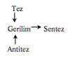
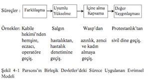
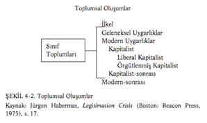

Bölüm 4 - EVRİM VE MODERNLİK: MAKROSOSYOLOJİK BAKIŞ AÇILARI
Giriş
Toplumsal evrime olan ilgi, toplumbiliminin kendisi kadar eskidir. Robert Nisbet’e göre, ilk sosyologların kaygıları, etraflarında olup bittiğini gözlemledikleri toplumun neredeyse topyekûn değişimini anlama çabasıdır.478 “İki devrim” -Fransız Devriminin dramatik baş-kaldırışı ve yavaş gelişme gösteren ama etkileri daha derinlere uzanan Sanayi Devrimi- hem aristokratik siyasî düzenin hem de kendilerinden önce babalarının ve dedelerinin yapmış oldukları gibi toprağı belleyen nüfusun büyük bir bölümünü oluşturan tarımsal toplumun sonunu getirmiştir. Böyle bir zamanda yaşamış olan aydınlar, toplumun bir biçimden tamamen farklı bir biçime doğru gelişmesi ve evrimi bağlamında düşünmek zorunda kalmışlardır.
478 Robert A. Nisbet, The Sociological Tradition (New York: Basic Books, 1966). Geoffrey Hawthorn, “Enlightenment and Despair: A History of Soci-ology” (Cambridge University Press, 1976) bakınız.
Toplumsal evrime olan ilgi, bütün yirminci yüzyıl boyunca toplumsal bilimin ayırıcı niteliği olarak kalmıştır: ama bugün de yine özellikle güçlüdür. Çalışmaları bu bölümde ele alınmış olan Anthony Giddens bu kuramcılardan biridir.
Herkesin bildiği gibi bir bitişler zamanında yaşıyoruz. Her şeyden önce bir yüzyılın değil, bir bin yılın sonudur: hiçbir içeriği olmayan ve tamamen indî olan bu olgunun —bir takvim üzerinde bir tarih— o denli bir somutlaştırma gücü vardır ki hepimizi esir alıyor... (Ama bu hikâyenin tamamı değildir ve “Hepimiz” burada yalnız Batı değil, bir bütün olarak dünya demektir.479
479 Anthony Giddens, Living in a Post Traditional Society, Ulrich Beck, Ant-hony Giddens ve Scott Lash’ın, Reflexive Modernization: Politics, Tradition and Aesthetics in Modern Social Order (Cambridge: Polity 1994) s. 56.
Bu bölüm toplumbiliminin en önemli evrim kuramlarını bir araya getirmektedir. Marx’ın çatışma bakış açısı ile Parsons’ın işlevselcili-ğini ele alır; aynı zamanda, toplumun yirminci yüzyılın sonlarının “küresel köy”ünde nereye doğru yöneldiğine dair bir çözümleme yapmak için Marx, Weber ve Durkheim’ın fikirlerinden yararlanmış olan Habermas, Giddens ve Beck’in çalışmaları da tartışılmaktadır. Bu yazarlar, Bölüm 9’da göreceğimiz gibi, bütün toplumsal bilimin (ve entelektüel düşüncenin) temelli bir değişim geçirmekte olduğuna inanan postmodernciler değildirler. Bunun yerine, burada anlatılan kuramcılar modernliğin yapısını çözümlemekte, fenomenoloji ve Goffman’ın simgesel etkileşimcilik şekli dâhil, büyük ölçüde makro olan bazı önemli yerleşmiş bakış açılarından yararlanmaktadırlar.
Entelektüel Kökler
Evrimsel düşünce toplumsal bilimde başlardan beri en önemli yeri işgal etmektedir. Sosyolojinin yaratıcısı Auguste Comte (17981857), insanlığın üç düşünce ve bunlara tekabül eden üç toplum tipinden geçerek ilerlediğini söyler; teolojik, metafizik ve doğmakta olan pozitifci model.480 Düşünce şekilleri, meşru otoritenin görüşlerini de etkilediği için, toplumun yapısını tanımlamakta çok önemlidir; ve bu meşruluk teması Habermas gibi çağdaş kuramcıların eserlerinde sıklıkla tekrar edilir.
480 Auguste Comte, The Positive Philosophy, çev. Harriet Martineau (New York: Calvin Blanchard, 1958).
Herbert Spencer (1820-1903), daha sonra, toplumların da basitten daha karmaşık şekillere doğru geliştiğini söyleyerek, Darwin’in evrimsel kuramını kullanır.481 O inanmaktaydı ki, hem organizmaların türlere doğru hem de toplumların daha farklılaşmış (uzmanlaşmış) yapılara doğru giden önlenemeyen bir eğilimi vardır. Bu farklılaşma, iktisatçıların iş bölümü olarak tanıdıkları şeyle eş değerdi ve Spen-cer’a göre, toplumların hacmindeki genişlemelerle kolaylaşmaktaydı. Talcott Parsons bu farklılaşma sürecini kendi evrimsel modelinin içine aldı.
481 Herbert Spencer, The Principles of Sociology (New York: Appleton, 1896).
Emile Durkheim (1858-1917): Eserleri birçok çağdaş kuramsal bakış açılarını etkilemiş olan Emile Durkheim, toplumsal örgütlenmede açık bir evrimsel eğilim olduğunu ileri sürmüştür.482 Artmakta olan nüfus yoğunluğunun, bireysel farkların en aza indirilmiş olduğu ve insanların ortak inanç ve benzer uğraşılara sahip oldukları “mekanik” dayanışmayı zayıflattığını yazmıştır. Zamanla bunun yerini, toplumun çok karmaşık bir iş bölümünün sonucu olarak bir arada tutulduğu “organik” dayanışma almıştır.483 Örneğin, ister Orta Afrika’ da ister İskandinavya sahillerinde olsun, bütün ailelerin gıda üretimi ve toplaması gibi aynı işlerde çalıştıkları sanayi öncesi bir köy büyük ölçüde kendi kendine yeterli olacaktır. Buna karşılık, bugün bir kentsel çevrede her birimizin bireysel hayatı, elektrik üretimi ve dağıtımı; yolların bakımı ve aydınlatılması; sokakların asayişi ve süpermarket satışları için gıda hazırlama gibi işlerde uzmanlaşan binlerce farklı insanlara dayalıdır.
482 Durkheim’ın görüşleri için Bölüm 2’ye bakınız.
483 Emile Durkheim, The Division of Labor in Society (Glencoe, III.: The Free Press, 1964).
Karl Marx (1818-1883): Evrimci kuramcılar arasında fikirleri gelecek olaylar bakımından en büyük öneme sahip kişi Karl Marx’dır. Bölüm 3’te Marx’ın, sınıf oluşumu, ideoloji, yabancılaşma ve devlet kuramını ayrıntılı olarak ele aldık. Marx aynı zamanda, toplumun çatışma yolu ile kaçınılmaz olarak komünist bir ütopyaya doğru ev-rimleştiği bir tarih kuramı geliştirmiştir. Yirminci yüzyılda aralarında Rusya, Çin, Küba ve Vietnam’ın da bulunduğu birçok ülkede yönetimi ele geçiren devrimci komünist partilere, bu ütopyacı görüş ilham vermiştir. Marxçı toplumbilimciler üzerinde devamlı etkisi ve tarihsel önemi dolayısıyla bu bölümde Marx’ın evrimsel kuramı etraflıca tartışılacaktır.
Joseph Schumpeter (1883-1950): Avusturyalı Joseph Schumpeter gücün dağılımındaki değişmeleri, aynı zamanda ve bilhassa Max Weber’in meşruluk ve bir grubun başarısının toplumsal mevkiden nasıl kaynaklandığı konularını işlemiştir. Schumpeter, toplumsal değişme ya da gelişmeyi —az çok örgütlenmiş ve ayırt edici bir özellik kazanmış toplumsal gruplar için kullandığı bir terim olan— farklı “sınıfların” gücündeki değişmeler ile bir arada düşünür. Sınıflar, ya yeni ya da yenileyici olan veya (değişmiş olan şartlar dolayısıyla) geçmişe göre çok daha önemli olan becerilere hâkim oldukları için gücü elde ederler.484 Bu gruplar mevkilerini daha fazla zenginlik ve ayrıcalık elde etmek, daha eski grupları bertaraf etmek ve kendilerini rekabete karşı korumak için kullanabilir.
484 Joseph Schumpeter, Imperialism and Social Classes (Cleveland: Meridian Books, 1955).
Ancak, sonunda, değerli sayılan hizmetleri sağlamaya devam edemedikleri ve yeni icatçı gruplar ortaya çıktığı için, güçlü sınıfların yerlerine başkaları gelir. Yeni sınıflar eskilere hücum etmekte başarılı olur ve onların meşruluğunu reddeder. Bunun gibi, yirminci yüzyılın sonlarında Amerika, kısa bir zaman önce mevcut olmayan işlere bakan birçok insanla dolmuştur. Örneğin, Silikon Vadisi (Silicon Val-ley) sanayileri, çeşitli eyaletlerin ekonomik —ve politik— gücünde büyük değişiklikler yaratmıştır.
Schumpeter’in en ilginç örneklerinden ikisi, emperyalist savaşçı grupların ortaya çıkması ve kapitalist burjuvazinin çöküşüdür. Ona göre, Ortaçağ feodal aristokrasisi savaşçı gruplardan doğmuştur. Savaşın devamlı olduğu, insanların sürekli olarak silahlı koruma aradıkları ve dövüş becerilerinin öğrenilmesinin ve ömür boyu muhafaza edilmesinin gerekli olduğu durumlarda, bir toplumda güç kazanmış-lardır.485 Modern devletin yükselişi, modern silahlar ve zorunlu askerliğin ortaya çıkması ile durum değişmiştir.
485 Schumpeter, Imperialism and Social Classes. Schumpeter’e göre eski Mısır tarihi de aynıdır. İstilacı Hyksos’Iarın püskürtülmesi ile, “Eski” ve “Orta” devirlerin bağımsız mal sahiplerinin güçlerini gasp eden “Yeni” İmparatorluk bir savaşçı sınıf yarattı.
Schumpeter, ekonomik başarılarından dolayı yükselmiş olan kapitalist sınıf şimdi inişe geçmiştir, der. Teknolojik icatçılık kurumlaşmış ve bağımsız girişimciler daha az önemli olmuştur. Bu arada, eski düzenin meşruluğunu zayıflatan ve kendisine giderek önem kazanan hükümet bürokrasilerinde yeni bir güç üssü yaratan, kendine özgü tavır alışları ve grup çıkarları olan yeni bir aydınlar sınıfı doğmuştur.486 Schumpeter’in fikirleri ve özellikle kapitalizmin meşruluk kaybı ile ilgili olanları, Jürgen Habermas’ın eserlerinde görülmektedir.
486 Joseph Schumpeter, Capitalism, Socialism and Democracy (London: Unwin University Books, 1943), s. 131-55. Schumpeter’in temel savı, şimdiki toplumsal eğilimlerin ve çatışmaların sonunda toplumu bir sosyalizm oluşumuna götüreceğidir.
Kısım Bir - Karl Marx ve Sınıfsız Toplum
Karl Marx’ın kuramının tümü, esas itibarıyla değişim ve evrim kuramıdır; bütün geçmiş tarihe ve geleceğe bakarak, her ikisini de anlayıp açıklayacağını iddia eder. Marx’a göre, herhangi bir ekonomik sistem, içinde değişim tohumlarını taşır; sistemin bu mantığı ve işleme şekli zorunlu olarak ondan sonra gelecek olanı yaratır.
Marxçılar bu süreci, belirli bir düzenin “çelişkileri” olarak tanımlar; bu çelişkiler zaman içinde sistemi çalışmaz hâle getirir ve şiddetli ve devrimsel bir değişim ile birinci düzenin “reddi” (negation) olan tamamen farklı bir düzene geçilir. Bir iç çatışma modeli olarak bu gelişme ve değişim görüşü, diyalektik olarak bilinir.487 Marx’ın yaban-
487 san bilinçliliği ile tarihsel gerçek arasındaki ilişkilerin tartışılmasında Marxçı felsefeci George Lukâcs’ın etkisinde kalmış olan bazı yazarların bu terimi daha karmaşık ve felsefi anlamda kullanmış olduklarını da belirtmek isteriz.
* Beş altı yüzyıl yaşadıktan sonra, kendi kendini yakan ve sonra küllerinin arasından tekrar doğan, ölümsüzlük simgesi olarak kabul edilen hayâlî bir kuş, anka kuşu. (ç.n.)
Bu durum çoğu zaman yeni bir sentez üreten “tez” ve onun karşıtı “antitez” terimleri ile ifade edilir.

Shlomo Avineri, The Social and Political Thought of Karl Marx (Cambrid-ge: Cambridge University Press, 1968), s. 171. Biz burada diyalektiği Marx’ın kullanımına sadık olarak tanımladığımızı düşünüyoruz. Ancak incılaşma dâhil, kuramındaki birçok diğer fikirler gibi, diyalektik fikri de Hegelci bir kavramın yeni bir şekilde ele alınmasıdır. Ancak Hegel kendi kendinin farkında olmanın geliştirilmesi ve “Ruh”la ilgilenmiştir. Marx ise ekonomik merhalelerden geçen insan toplumunun evrimi ile ilgilidir.
Marx, her biri kendi “belli başlı sınıfları” olan dört büyük sınıf toplumu belirlemiştir: Asya tipi, kadîm, feodal ve burjuva. Asya’ya özel olanı, devletin denetimi altında olan sulama sistemi ile bütün toprağın hanedanın mülkiyetinde ve egemenliğinde olduğu sistemdir: Marx ancak son üç tipi Batı tarihinin parçası olarak ayrıntılarıyla ele alır. Her birinde değişim, yeni sınıfların ortaya çıkmasına yol açar. Roma imparatorluğu’nu istila eden barbar asker yöneticiler, kadîm toplumun yerine feodal lordlar ve serflerden oluşan bir toplum getirmişlerdir; bu toplumun da yerini, proletaryanın düşmanı olan kapitalist burjuva toplumu almıştır. Marx’ın kehanetine göre, bundan sonraki aşama farklı olacaktır, çünkü kapitalizmin içinde bulunan çelişkiler, mülkiyet ve sınıfın ortadan kalktığı ve yabancılaşmanın yerini kendi kendini gerçekleştirmenin aldığı ideal bir topluma yol açacaktır. Diyalektik terimlerle, komünist toplum “kapitalist toplumun küllerinden bir phoenix* gibi doğacaktır”.488
488 Avineri, The Social and Political Thought of Karl Marx, s. 182.
Kapitalizmin Sonu
Marx zamanla, daha önceki safhalardan kalan başka belirli toplulukların —esnaf, köylü, sanatkârlar— birçok ufak kapitalist ile birlikte, becerilerinin modası geçtiğinden veya sermayeleri rekabet edemeyecekleri kadar küçük olduğundan, proletarya tarafından yutulacağını iddia etmiştir. Sadece her zamankinden daha fazla birbirinden farklı iki sınıf kalacaktır. Aynı zamanda, kapitalistler sömürdükleri iş gücünün sırtından daha çok üretmeye devam edecekler, ama pazarları o ölçüde genişlemeyecektir. Bu takdirde rekabet, kapitalistleri, fiyatları ve ücretleri indirmeye zorlayacak ve kâr oranı sıfıra doğru azalacaktır. Sonuç, kitleler için sefalet, aynı zamanda isyan ve kapitalizmin son bulması olacaktır.
Marx, böylece, “gaspçı ve tekelci büyük sanayilerin sayısı gittikçe azalırken... sefalet, baskı, esaret, küçülme, sömürü artacak; ama bununla beraber, sayıca devamlı artan disiplinli, birleşmiş ve örgütlenmiş işçi sınıfının isyanı büyüyecek... Kapitalist özel mülkiyetin ölüm çanları işitilecek. Gaspçıların malı gasp edilecektir”489 demektedir.
489 Karl Marx, Capital, Cilt I, çeviri Samuel Moore ve Edward Aveling, edit. F. Engels (London: Lawrence and Wishart, 1961), Bölüm 32 (Kapitalist Birikimin Tarihî Eğilimi ), s. 762-63.
Marx’ın tahminleri gerçekleşmemiştir. Batıda sefalet devamlı olarak artmamış, kâr nispeti yine devamlı olarak azalmamıştır. Bundan başka, üretim daha fazla “temerküz” etmekle (bir araya toplanmakla) beraber, mal sahipliği ve hissedarlık gitgide sendikalar ve emekli sandıklarına geçmiştir. Marxçı çözümlemeciler kapitalizmin devam etmesinin geçici olduğunu göstermeye çalışmışlardır.490
490 Serge Mallet, La Nouvelle Classe Ouvriere, 4. ed. (Paris: Editions du Seuil, 1969) Otomasyona geçmiş işletmelerde sınıf bilinçliliği artacaktır, çünkü çalışanlar hesabını yaparak ortak çıkarlarının farkına varacaklardır, demektedir.
Lenin’in emperyalizm kuramı bu iddianın en etkili örneğidir. Marx büyük eseri Kapital’de, kapitalist ülkelerin, sömürgelerini, kendi sanayilerine hammadde sağlayan kaynaklar, üretimlerini tüketecek esir pazarları ve yağmalanacak hazineler olarak kullanmış olduklarını yazar.491 Lenin, bu görüşlerden Marxçı emperyalizm kuramını geliştirmiştir. Lenin, ileri kapitalizmin gittikçe genişleyen pazarlara ihtiyacı olduğunu ve kârlı yatırım fırsatlarının, emperyalist bir politikaya ve sömürgelerin ele geçirilmesi amacı ile sanayici rakipler arasında yıkıcı savaşlara yol açacağını iddia etmiştir.492 Emperyalizm, kârların yok olacağı ve kapitalizmin ortadan kalkacağı zamanı geciktirecektir.
491 Marx, Capital, Cilt I, Bölüm 33 (The Modern Theory of Colonization).
492 Vladimir I. Lenin, lmperialism: The Highest State of Capitalism (New York: International Publishers, 1939).
Açıktır ki, hükümetler, ülke yatırımcıları ile tüketicilerin ekonomik çıkarları doğrultusunda hareket edecektir. Batı devletlerinin Irak’ın Kuveyt’i işgal etmesi karşısında acilen harekete geçmeleri ile, eski Yugoslavya karşısındaki tereddütleri buna bir yakın örnektir. Ancak eleştirmenler Marxçı emperyalizm kuramının yetersiz ve çok zaman yanlış olduğunu iddia ederler. Kapitalist olmayan ülkelerin emperyalist politikalarına işaret ederler. (Örneğin, Çin’in Tibet’i ele geçirmesi, ya da Sovyetler Birliği’nin Baltık Devletleri’ni işgal etmesi); aynı zamanda emperyalizmin, azalan kârlar tehdit etmeden önce, kapitalizmin ilk günlerinin özelliği olduğunu da belirtirler. Buna karşılık, modern kapitalist devletler, eski sömürgelerinden çekilmişlerdir.
Emperyalizm ile ilgili Marxçı fikirlerle çok sıkı ilişki içinde bulunan, dünyayı merkez (core) ve çevre (periphery) olarak ikiye ayıran bağımlılık kuramıdır.493 Marx ve Lenin gibi bağımlılık kuramcıları olayları, belirli bir tarih sürecinin parçası olarak çözümlerler: kapitalizmin dünya çapında genişlemesi. Merkez, endüstri bakımından ileridir ve kendi iç dinamiklerinin sonucu olarak gelişir. Buna karşılık, çevrenin bağımlı ülkelerinde ise, olanlar, merkezin istek ve ihtiyaçlarına dayanır.
493 Özellikle Andre Gunder Frank, Dependent Accumulation and Underdevelopment (London: Macmillan, 1978).
Dünya Sistemleri Kuramı
Bu fikirler, Immanuel Wallerstein tarafından “modern dünya-siste-mi” üzerindeki çalışmasında biraz daha geliştirilir. Ona göre, kapitalizm altında olan şey, ilk defa politik ya da askerî değil de, ekonomik bağlarla bir arada tutulan gerçek bir dünya sistemidir.494 Modern kapitalist dünya ekonomisinin büyümesi, Batı Avrupa’nın merkez ülkelerinin coğrafi olarak genişlemesi ile mümkün olmuştur. 16. yüzyılın keşif ve istilâlarını ekonomik egemenlik takip etmiştir.
494 Geçmişte dünya imparatorlukları vardı (Roma gibi), fakat bunlar ekonomik değil askerî olarak bütünleşmişlerdi.
16Wallerstein’a göre, dünya sisteminin farklı kısımları, farklı işlevlere ya da uzmanlaşmış işlevlere sahiptir. Böylece çevre, merkezin girişimcilerine hammadde sağlar.495 Bu fark, emeğin farklı alanlarda kontrol ediliş şeklinde kendini gösterir. “Özgür emek, merkez ülkelerde beceri gerektiren iş için kullanılan emeği denetim (control) şeklidir, buna karşılık çevre bölgelerde daha az beceri gerektiren işlerde emeğin zorlanması söz konusudur. Bunların bileşimi kapitalizmin esasıdır.”496
495 Wallerstein sömürücü ile sömürü arasında ‘Yarı Çevre”den söz eder.
496 Immanuel Wallerstein, The Modern World-System I: Capitalist Agriculture and the Origins of the European World-Economy in the Sixteenth Century (New York: Academic Press, 1974) s. 127. Aynı zamanda, onun, Modern World System II: Mercantilism and the Consolidation of the European World-Economy 1600-1750 (New York: Academic Press, 1980) ve The
Modern World-System III: The Second Era of Great Expansion of the Capitalist Economy, 1730 - 1840 (New York: Academic Press, 1988).
Wallerstein, aynı zamanda merkez bölgelerin güçlü devletler ve çevre bölgelerinin zayıf devletler geliştirdiğini ileri sürer. Kapitalizmin ilk aşamalarında, devletler, büyümekte olan bürokrasileri ve güç tekeli ile önemli toplumsal denge sağlamıştır. Ancak kapitalist dünya sistemi ekonomik bütünleşmedir ve merkez ekonomik düzeneklerle (mekanizmalarla) çevreyi denetim altında tutar.
19Küreselleşme (globalization), 20. yüzyılın sonlarının dünyasını betimlemek için sıkça ve çoğu zaman yanlış kullanılmış olan bir terimdir. Örneğin, ülkelerin kendi siyasal işlerini, eğitim sistemlerini ya da aile yaşantılarını yürütürken önlenemez bir yakınlaşma veya küreselleşme eğilimi görülmektedir. Ancak serbest ticaretin büyümesi, hızlı ve ucuz milletlerarası taşımacılık, Doğu Asya ekonomilerinin gelişmeleri ve çok uluslu şirketlerin büyüklükleri ve önemleri, birçok ülkenin ekonomilerini öncesine göre daha iç içe bir duruma getirmiştir. Ama dünya-sistemi bağlamlarında, az gelişmiş ülkelerin kapitalist üretim tarafından, daha fakirleşme anlamında istismar edilmiş olup olmadıkları veya istismar edilmekte olup olmadıkları hususunda eleştirel sorgulamalar vardır. Bu eleştiriler, 19. yüzyıl Amerika’sının, bugünün en hızla büyüyen ülkeleri497 gibi, en fazla yatırım alan ülke olduğuna ve merkezdeki en zengin ülkelerin -Avusturalya gibi- en fazla hammadde ihracatçısı olduklarına işaret etmektedir. Wallers-tein’ın çalışmaları Randall Collins tarafından, genellikle askerî tekno-lojidekiv498 değişimlerin önemini abartmakla ve feministlerce, kadınları “ev içinde erkeklerin eklentileri”499 olarak ele almakla ve ekonomik gerekircilik veya siyasal örgütlenmenin ve diğer ekonomik olmayan etkenlerin önemini küçümsemekle eleştirilmektedir.
497 Bu savların ayrıntıları için Irving M. Zeitlin, Capitalism and Imperialism: An Introduction to Neo-Marxian Concepts (Chicago: Markham, 1972); Irving Louis Horowitz, “Three Worlds of Development, 2. Baskı, (New York: Oxford University Press, 1972); P. T. Bauer, Dissent on Development (London: Weidenfeld and Nicolson, 1971) ve Equality, the Third World and
Economic Delusion (London: Weidenfeld and Nicolson, 1981) ve Robert W. Tucker, The lnequality of Nations (New York: Basic Book, 1977).
Bu eleştirmenler arasında, Theda Skocpol ve Anthony Giddens, dünya çapında tarihsel gelişmeleri çözümlemekte Marxçı kurama başvurdukları için dikkate değerdirler. Skocpol toplumsal devrimler ile ilgili çalışmasında, devletlerin hem iç sorunlarla hem de uluslararası sistemle baş etme kabiliyetinin çok büyük önem taşıdığını bildirir. Çünkü Wallerstein devletler arasındaki farkları sadece ekonomik şartların yansımaları olarak gördüğü için, merkezî mevki işgal ettiği kabul edilen farklı ulusların çok farklı tarihlerini ve kapitalizmin menşeini doyurucu olarak açıklayamamıştır.500
500 Theda Skocpol, “Wallerstein’s World Capitalist System: A Theoretical and Historical Critque”, American Journal of Sociology 82, no. 5 (1977): 1075-90, ve States and Social Revolutions (Cambridge: Cambridge University Press, 1979).
Marx’ın belirli kehanetlerinin doğru olmaması dolayısıyla, kapitalizmin de kaçınılmaz olarak ortadan kalkacağı konusunda da yanıldığı sonucuna varılamaz. Joseph Schumpeter dâhil birçok çözümlemeciler —kâr oranının düşmesi yüzünden değil— ortadan kalkacağı hususunda görüş birliğindedirler.
Görüşleri bu bölümde daha sonra tartışılan Giddens, kapitalizmde ekonomik olarak bütünleşmiş gerçek bir küresel olguya sahip olduğumuzu vurgulayan Wallerstein’ı beğenmektedir. Ancak, “belirgin siyasal ve askerî etkenler”in de501 tanınmasında ısrarlıdır. Bir dünya kapitalist ekonomisinden, ancak bunun dünya sisteminin yalnızca bir veçhesi (aspect) olduğunu, ve “küreyi kucaklayan ulus-devlet sis-temi”nin de aynı derecede önemli olduğunu hatırlarsak, söz edebiliriz. Geleneksel devletlerden farklı olarak, ulus-devlet, kendisinden önceki diğer devlet örgütlenme şekillerini ortadan kaldırmış olan bir “güç taşıyıcısı”dır. Bunun nedeni kısmen, başlangıçtan beri endüstrinin yeni silahlar sağlamak için kullanılması ve kısmen de, bu devletlerin yönetim gücünün çok genişlemiş olmasıdır.502 Bunlar da kapitalizm kadar modern dünyamızın yapısını belirlemektedir.
501 Anthony Giddens, The Nation-State and Violence: Vol. II of a Contemporary Critique of Historical Materialism (Cambridge: Polity, 1985) s. 168. Giddens da Wallerstein’ı “yan çevre bölgelerinin dünya sisteminin ‘ihtiyaçlarına’ gönderme yapılarak açıklamasında olduğu gibi işlevselcilikle de eleştirmektedir: The Nation State and Violence, s. 167.
502 Giddens, The Nation-State and Violence s. 170-172, 255-311.
Marx’dan etkilenmiş olan başka kuramcılar, toplumsal evrimde teknolojik etkenlere dikkat çekerler. Örneğin, Gerhard Lenski’nin çalışmaları, avcı toplumların, bugüne kadar dünyada siyasal (ve malî) bakımdan, ama zenginlik dolayısıyla değil, yoksulluk dolayısıyla en eşit olan toplayıcı toplumlara dönüşmesine yer verir; temel malları üretmekle doğrudan ilişkili olmayan büyük bir topluluğu besleyebilecek bir varlık yoktur. Bunları takip eden tarımsal toplumlar, servetin büyüklüğü ve nüfusun yoğunlaşması din ve merasim yolu ile egemen olan askerî bir aristokratlığa veya ruhbanlığa yol açacağından daha eşitsizdir; endüstri toplumları, karmaşık örgütlerin çalıştırılabilmesi gücün yayılmasını gerektirdiğinden, daha az eşitsizdirler.503 Bazen Marx’ın kendisi, üretim tekniklerinin, toplumsal yapıları belirlediğini söyler. Ancak onun evrimci kuramı teknolojiden ziyade, mülkiyet ve sınıf —üretim ilişkileri— üzerinde odaklanmıştır. Takipçi evrim kuramcıları, onun etkisinde kalmış olmakla beraber, evrime neyin neden olduğu ve modern toplumların yapısı konularında daha çok yönlü görüşlere sahiptirler. Bu durum, şimdi ele alacak olduğumuz Tal-cott Parsons için geçerlidir.
503 Gerhard E. Lenski, Power and Privilege: A Theory of Social Stratification (New York: McGraw-Hill, 1966).
Kısım İki - Talcott Parsons’ın Evrimsel Modeli
25Parsons’ın toplumsal değişme ile ilgili düşünceleri, Societies: Evolu-tionary and Comparative Perspectives (Toplumlar: Evrimsel ve Karşılaştırmalı Bakış Açıları)’i yazdığı 1960’ların ilk başlarına kadar tam olarak geliştirilmemiştir. Bu çalışmanın basılması, insan toplumunun evrimsel gelişmesine yeniden ilgi uyandırmıştır. Parsons’ın bu çalışması çok genel düzeyde olmasına rağmen, yüzyılın ortalarını evrimsel bir çerçeveye oturtan Batı toplumsal modellerini de bütünleştir-miştir; ve bunu toplumsal modellerin 1960’ların karışıklıklarını izleyerek değişmekte olduğu bir sırada yapmıştır.504
504 Bir antropologlar grubu da Spencer’ın biyolojik analojilerini yeniden canlandırmıştır. Bunların aralarında en önemlileri, bir toplumun evrim derecesinin doğanın enerjisinden faydalanma potansiyeli —ki onlara göre burada kültür çok önemlidir— bağlamında tesbit edilebileceğine inanan Marshall Sahlins, Elman Service ve David Kaplan’dır. Marshall D. Sahlins ve Elman
Service, Evolution and Culture (Ann Arbor, Mich.: University of Michigan Press, 1960) bakınız. Ekonomik evrim ve toplumsal gelişme üzerindeki etkileri için: John Hicks, A Theory of Economic History (Oxford: Oxford University Press, 1969).
Parsons’ın evrimle ilgili düşünceleri, kalıp değişkenler tipolojisi ve dört işlevi modelinin geliştirilmesi olup, Durkheim’ın görüşlerinin kapsamlaştırılmasıdır. Durkheim gibi, Parsons toplum evriminin ilk safhası olarak, dünyada akrabalık ilişkilerinin ve dinsel yönelimin belirgin olduğu ilkel ya da tarih öncesi safhayı kabul etmektedir. Buna ilave olarak, belirgin özelliği yazılı dil olan ve dolayısıyla da belge ve tarihin mevcut olduğu bir ara safha kabul etmektedir. Modern ve üçüncü safhanın özelliği, ilişki ve işlemlerin resmîleşmesi —daha da önemlisi— yasanın kurumsallaşması ve yetişkinlerin okur-yazarlığıdır.505
505 Parsons, Societies: Evolutionary and Comparative Perspectives (Englewood Cliffs, N.J.: Prentice-Hall, 1966) s. 26-27. Talcott Parsons, The System of Modern Societies (Englewood Cliffs, N.J.: Prentice-Hall, 1971).
27Parsons, Durkheim’ın düşüncelerini aksettirerek ve Spencer’ın farklılaşma kavramını kullanarak, devamlı ve gittikçe artan farklılaşmanın, (yani, bir birim veya sistemin “hem yapı bakımından hem de daha büyük olan sistem için işlevsel önemi bakımından farklı” iki ya da daha fazla birim veya sistemlere bölünmesi)506 toplumsal sistemlerin evriminin anahtarı olduğunu söylemektedir. Başka bir deyişle, ilkel toplumlardan modern toplumlara geçişte, rollerin bir vaziyete göre belirdiği durumdan, rollerin farklı rol yüklerine göre tahsis edilmiş olduğu bir duruma geçilmesi, farklı bir evrim düzeyine gelinmiş olduğuna işaret eder. Bu geçiş, her şeyden önce, çevre üzerinde daha geniş bir denetime yol açacağından, çok önemlidir. Parsons, örnek olarak, ekonomik üretimin fabrikalarda kendi kendine yeterli aile işletmelerinden daha verimli olacağına işaret etmektedir.507
506 Parsons, Societies: Evolutionary and Comparative Perspectives, s. 22.
507 Parsons, Societies: Evolutionary and Comparative Perspectives, s. 22.
Evrimsel Evrenseller (Tümeller)
Parsons, evrimsel evrensel öğeler temel modelini geliştirirken, “yalnız bir defaya mahsus olarak ortaya çıkmamış, farklı şartlar altında çalışan çeşitli sistemlerin de karşısına çıkacak, evrimi ileriye götürecek kadar önemli herhangi bir örgütsel gelişme” olarak tanımladığı birkaç evrimsel “evrensel” belirlemiştir.508
508 Parsons, “Evolutionary Universals in Society”, American Sociological Review 29 (1964), s. 339-357.
Her şeyden önce, toplulukların ilkel safhadan “kurtulup”, tam anlamıyla toplum diyebileceğimiz safhaya gelebilmesi için; dil, akrabalık örgütlenmesi, din ve bir miktar teknoloji gereklidir. Bunu sırası ile altı önemli evrimsel evrensel izler: toplumsal tabakalaşma, kültürel yasallaşma, bürokratik örgütlenme, para ekonomisi ve piyasalar, genelleştirilmiş evrensel normlar ve demokratik birlikler (associations). Bu evrimsel gelişme süreci daha fazla farklılaşma ile başlar, toplumlar gelişip bu yapılara sahip oldukça, farklılaşma (başka şekillerde değişmelerle birlikte) daha da artar.
Parsons’ın evrimsel modeli, yapıları ve süreçleri içine almakta-dır.509 Yapılar (örüntülü ve dengeli ilişkiler); toplumsal tabakalaşma, kültürel yönden meşrulaşma, bürokratik örgütlenme, para ve piyasalar, genelleştirilmiş evrensel normlar ve demokratik birliklerdir. Süreçler (sistem içinde yer alan evrimsel değişimler); farklılaşma, uyumlu yükselme (adaptive upgrading), dâhil olma ve değer yaygın-laşmasıdır.
509 Giriş-Bölüm 2’ye bakınız.
Parsons artan farklılaşmadan doğacak ilk yapının toplumsal tabakalaşma olduğunu söylemektedir.510 Böylece, rütbe ve rol farklılaşmasına, daha yüksek ve daha düşük “saygınlık” sağlayan uğraşılar kavramını ilave etmiştir. Parsons çalışmalarının ilk başlarında bazı işlerin, daha fazla yetenek ve beceriye ihtiyacı olduğundan; insanları bu işlere hazırlamak için çok para, zaman ve enerji sarfedilmesi gerektiğinden; en yetenekli kişileri bu işlere çekebilmek ihtiyacı yüzünden, daha yüksek bir saygınlığa sahip olduğunu ve daha çok para kazandırdığını söyleyerek, bir tabakalaşma kuramı ortaya koymuştur.511 Böylece, modern okulların, yalnız değerleri öğretmekle kalmayıp, çocukların yeteneklerinin ortaya çıkmasını sağlayarak ve gelecekteki uğraşılarını belirleyerek, tabakalaşma aracı olarak çok önemli bir işlevi yerine getirdiğine inanmaktadır. Parsons’ın buradaki temel görüşü, karmaşık bir toplumda bir tabakalaşma sistemi hem istenmelidir hem de gereklidir, doğrultusundadır; çünkü tabakalaşma, iş alanlarının yetenekli kişilerle doldurulmasını ve bütün toplumsal sistemin düzenli olarak işlemesini sağlamaktadır. Sonuç olarak, toplumsal tabakalaşma evrimsel bir “evrensel”dir; o olmadığı takdirde çok farklılaşmış bir toplumun devam etmesi imkânsızdır.
510 Parsons, ed., Sociological Theory and Modern Society (New York: The Free Press, 1967)’ye bakınız.
511 Parsons’ın “An Analytic Approach to the Theory of Stratification” American Journal of Sociology 45 (1940): 843’e bakınız.
34Toplumsal tabakalaşmanın işlevsel çözümlemesi, Parsons’ın kuramının en çok tartışılan kısmıdır. Özellikle çatışma kuramcıları Par-sons’ın çözümlemesi ile aynı görüşte değildirler.512 Bunlardan bazıları, bir tabakalaşma sistemi, mümkün olduğuna inandıkları sınıfsız toplumun antitezi olduğu için böyle düşünmektedir. Onlara göre işlevselcilik, tabakalaşmanın gereğine ağırlık verdiği için, esasta muhafazakâr bir vaziyet almaktadır. Diğer bazıları, tabakalaşmanın kaçınılmaz olduğunu kabul etmekle beraber, tabakalaşmanın neden ve nasıl kaçınılmaz olduğu ile ilgili açıklamaları kabul etmemektedirler. Tabakalaşmaya, toplumda daha güçlü olanların daha fazla saygınlık ve servet sağlamalarına yol açan eşitsiz güç dağılımının bir yönü olarak bakmaktadırlar. Bazı sosyologlar da işlevselci görüşün tamamen yanlış olmayıp, tek yanlı olduğunu kabul etmektedir. Onlara göre, mükemmel bir “liyâkata dayalı tabakalaşma, sınıflanma”, liyâkata göre ödüllendirme görüşünü varsaymaktadır ve yoksullar, kadınlar veya azınlık toplulukları gibi daha alt düzey statü topluluklarında doğmuş kişilerin yeteneklerini görmezden gelmektedir.513
512 Bölüm 3’e bakınız.
513 İşlevsel tabakalaşma kuramı ile ilgili geniş açıklama için Mark Abrahamson, Functionalism (Englewood Cliffs, N.J.: Prentice-Hall, 1978), s. 5774’e bakınız. Abrahamson burada Davis ve Moore, Tumin ve diğerlerinin görüşlerini tartışmaktadır.
Yukarıda belirttiğimiz üzere, Parsons farklılaşma’yı, toplumsal sistemin evriminde anahtar olarak görmektedir. Ona göre, rollerin belirlenmesinde farklılaşma ve onunla birlikte toplumsal tabakalaşma olmazsa, uzmanlaşma ve teknolojik gelişme olamayacaktır. İkinci evrimsel süreç olan uyumlu yükselme (adaptive upgrading), çevrenin denetimi veya çevreye egemen olmakla ilgilidir;514 ve bu da, her bir “evrensel”in gelişmesi ile sağlanır. Burada Spencer’ın etkisi açık olmakla beraber; Parsons, toplumsal değişimin başlıca eğilimini kav-ramlaştırmakta Weber’in akılsallaştırma fikrine dayanmaktadır. We-ber’in görüşüne göre, modern toplum, ilkel toplumda tesadüf olarak açıklanan hususu akılsallaştırmış; hesap edilebilir ve önceden tahmin edilebilir hâle getirmiştir. Robert Bellah, The Good Society’de (İyi Toplum) Weber’in akılsallaştırma (rationalization) kavramını, “serveti ve/veya gücü artırmanın mümkün olan en etkili aracı yapmak için, bütün toplumsal ilişkileri sistematik olarak örgütleme süreci” şeklinde tanımlayarak kullanır: “bunun belirgin kurumları, kendi kendini düzenleyen piyasa ve bürokratik devlettir” der.515
514 Burada evrimsel değişim konusunda Parsons ile Habermas arasında benzerlik vardır. Bu bölümün Kısım 3’üne bakınız.
515 Robert Bellah, Richard Madsen, William M. Sullivan, Ann Swidler ve Steven M. Tipton, The Good Society (New York: Knopf, 1991), s. 233.
Parsons’a göre, evrimsel değişim süreci, toplumlarda uyum kapasitelerini —yani çevreden kaynaklanan birtakım güçlüklere rağmen çeşitli hedeflere varma kabiliyeti— geliştirir.516 Örneğin, Parsons, gitgide daha fazla farklılaşmaya yol açan bürokratik örgütlenmenin, toplumlara daha iyi uyum sağlama üstünlüğünü vermektedir, çünkü, bunun gerektirdiği uzmanlaşma, yeteneğin daha iyi kullanılmasına ve çevreden gelen beklenmedik durumları daha kolaylıkla karşılamaya yol açacaktır, demektedir. Bir toplum eğer kültürel meşrulaştırmaya sahip olmuşsa —yani “biz’liğin kültürel tanımı, kabile toplumunun sınırlarını aşarak daha geniş bir topluma yayılmış ve kurumlaştırılmış ise— o toplum uyum üstünlüğüne sahiptir. Bir ülkede “ulus” (“na-tion”) fikri yalnızca ortaya çıkmakla kalmayıp, yurttaşları tarafından kabul edilmiş ise, o ülkede kültürel meşrulaşma vardır.517
516 “Uyum kapasitesi” terimi Spencer’dan alınmıştır (The Principles of Sociology).
517 İşlevselciliğin paylaşılan değerler üzerine vurgusunu benimseyen Bellah et al., The Good Society’de ortak çıkarın herkesçe anlaşılmasının demokrasiye götüreceğini savunur.
Parsons, evrimsel değişme modelinde farklılaşma ve uyumlu yükselmeye ilave olarak, iki süreç daha düşünmüştür. Bunlardan biri, içine alma/kapsama (inclusion) adını verdiği bir çeşit fark gözetmeme sürecidir.518 Örneğin Birleşik Devletler’de uyumlu yükselmenin gerçekleşebilmesi için, insanlar bazı mesleklerden ırk, cinsiyet, yaş, din veya geldikleri ülkenin farklı olması dolayısıyla artık dışlanmayabilirler. Toplumun, dışlanmış olan kişilerin, sistemin işlemesine katkıda bulunabileceklerini anlaması lazımdır. Başka bir deyişle, doğuştan getirilen özelliklere bakmaksızın ne kadar çok yetenek geliştirilirse, toplumda uzmanlaşmış üye sayısı o kadar çok olacak ve sistem de o derecede üretken olacaktır.
518 Parsons, Societies: Evolutionary and Comparative Perspectives, s. 22.
Bu kapsama (içine alma)’ya Parsons, değer yaygınlaşması (value generalization)’nı da katmaktadır. Bu evrimsel süreç ile ortaya çıkan yeni toplumsal sistemde “alt birimlerdeki çeşitli amaç ve işlevleri meşrulaştırabilmek için daha üst düzeyde bir yaygınlığa sahip” bir değer örnek çerçevesi olması lazımdır.519 Başka bir ifade ile, toplumsal sistemin yalnız bir kısım üyelerince paylaşılmakta olan sınırlı bir değer sistemi ile; daha yüksek düzeyde farklılaşma, uyumlu yükselme ve “kapsanma” süreci bir arada varolamaz. Robert Bellah’ın sivil din fikri, Amerika’da değer yaygınlaşmasına bir örnektir. Bu dinin adı ne olursa olsun, ne Protestan, ne Katolik ne de Yahudi’dir; esas itibarıyla, bir yurt sevgisi dinidir.520 Bu öyle bir sivil dindir ki, Amerika’daki başlıca üç dinin her birinden daha fazla, çeşitli amaç ve işlevi kucaklamakta, yaşama değerlerini, özgürlük ve mutluluk aramayı benimsemekte; çok çeşitli üyeye sahip bir toplum için gerekli olan daha genel bir değer örüntüsü sağlamaktadır.
519 Parsons, Societies: Evolutionary and Comparative Perspectives, s. 23.
520 Robert N. Bellah, “Civil Religion in America”, Daedalus 96 (1967): 1-21.
Evrimsel süreçlerin yönü, farklılaşma’dan uyumlu yükselme, içine alma/kapsama ve değer yaygınlaşması’na doğrudur. Şekil 4-1’de bu süreçlerin Amerika’da nasıl gelişmiş olduğunu gösteren bir örnek verilmiştir. Hastalığı iyileştirdiği kabul edilen şaman’dan hemşire, eczacı veya operatöre geçiş; salgın hastalıklardan hastalığın denetim altına alınmasına geliş, tıp alanında uyumlu yükselmeyi göstermektedir; yalnız Beyaz Anglo Saxon Protestan erkek (WASP) alan tıp okullarının ve genellikle yükseköğretimin ırksal ve etnik azınlıkları ve kadınları da alacak şekilde değişmesi, “içeri alma” sürecine örnektir; din alanında ağırlıkla Protestan olan değer sisteminden Amerikan sivil dini’ne geçiş, değer yaygınlaşmasının bir örneğidir.

Miriam Johnson, Birleşik Devletler’de kadın hareketinin doğmasını Parsons’ın dört evrimsel sürecini kullanarak açıklar.521 Modernleşmenin bireylerin giderek artan özerkliğine bağlı olarak kişilik ile toplum arasında daha açık bir farklılaşma yarattığı doğrultusundaki Parsons’ın savını aktarır.522 Sonra şöyle devam eder, “cinsiyet eşitsizliği düşüncesi kısmen, insanların kimliklerinin ve kendileri ile ilgili değer yargılarının oynamakta oldukları roller ile yürüttükleri faaliyet
521 Ruth A. Wallace, ed., Feminism and Sociological Theory (Newbury Park, Calif.: Sage, 1989), s. 101-118 de Miriam Johnson, “Feminism and the Theories of Talcott Parsons”.
522 Parsons, Societies: Evolutionary and Comparative Perspectives, s. 24.
ten ayrılmasına neden olan bir farklılaşma sürecine dayalıdır”. John-son’a göre, bu farklılaşma süreci “Batı feminizminin özelliği olan anlayışları mümkün kılar.523
523 Johnson, “Feminism and the Theories of Talcott Parsons”, s. 108.
Johnson bundan sonra, eğitimli kadınların erkeklerle eşit temelde, evin dışında meslek hayatına katılmalarının, sisteme daha fazla yetişmiş kapasite getirdiğinden, uyumlu yükselme olduğunu iddia etmektedir. Ancak, buna hemen, bu katılmanın kolay bir süreç olmadığını, kadın ücretlerinin hâlâ erkeklerinkinden çok daha düşük olduğunu; ve evin dışında çalışsalar bile çocuk bakımı büyük sorumluluğunun hâlâ kadınlarda devam ettiğini ilave eder. Son olarak, feminist yazılarının çoğunun, başat (erkek) toplum değerlerini yeniden tanımlama gayreti olarak betimlenebileceğini ve bunun Parsonsçı bir anlatımla değer genelleştirilmesi yolunda bir çaba olduğunu söyler.
Kadın hareketinin sınırlı başarısı, Parsons’ın toplumsal değişme modelindeki zayıflığa işaret eder: Buraya zorlanma, gerilim ve direnme (resistance) sürecine karşı koymanın da sokulması gereklidir. Bu, aynı zamanda farklılaşma, uyumlu yükselme ve değer genelleşmesine karşı direnme sorununu ortaya çıkarır. Esasında bize göre, dört değişim sürecine zorlanma, gerilim ve değişime karşı koyma eklenebilirse Parsons’ın evrimsel kuramı kuvvet kazanacaktır.524
524 Buna ek olarak: Frank Lechner, “Modernity and Its Discontents”, Jeffery C. Alexander, ed., “Neofunctionalism” (Beverly Hills, Calif.: Sage, 1985) s. 156-76’da, Parsons’ı tepetaklak ederek toplumsal değişim kuramını düzensizliğin dört işlevsel kaynağının irdelenmesinde temel olarak kullanmalıyız, der. Örneğin Lechner, “içeri almanın” karşı koyma yaratacağını iddia eder.
Bu, bir zamanlar kolektif duygularla birbirlerine sıkıca bağlanmış olan toplulukların bozulması demektir. Böyle bir süreç acı, gerilim ve karşı koyma yaratacaktır. Kadınlar ve toplumda marjinal durumda olan başka gruplar, bu yorumun içeri alınma ile ilgili pürüzleri açıklamakta yardımcı olacağını hemen göreceklerdir.
Parsons bütün toplumların kaçınılmaz olarak tek düze bir gelişme çizgisini izlediklerine dair eski evrimsel görüşü reddeder; ancak insan tarihinin, uyum kapasitesinde bir artış eğilimine doğru gidiş içinde olduğunu kabul eder.525 Bütün toplumların bu evrimsel süreçlerden giderek ve düzgün bir şekilde geçtiğini iddia etmemektedir. Toplumların gelişmesinde çok önemli gördüğü ve herhangi bir başka topluma gelişigüzel olarak uygulanamayacak (aşılanamayacak) birtakım önemli özelliklere işaret etmektedir.526 Örneğin, Aztekler ile modern toplum arasındaki farkları anlamak istiyorsak, bunların önemli kurumlardan hangilerine sahip olduklarına ve bu kurumların nasıl değiştiklerine bakmamızı söyleyecektir. Her toplumda ‘’uyumlu yükselme”, “içeri alma” (kabul etme) ve diğerlerinin derecelerine bakmak gerekecektir. Bunun gibi Parsons, kabile veya akrabalık esaslarına dayalı bir topluma, demokrasiyi veya modern yasal sistemi sokmak çabasını şüphe ile karşılayacaktır.527
525 Benton Johnson, Functionalism in Modern Sociology: Understanding Talcott Parsons, (Morristown, N.J.: General Learning Press, 1975), s. 41
Parsons toplumsal değişimin olasılıkları hakkında iyimserdir. Kuramında, evrim ve ilerleme aynı anlamdadır ve demokrasi mantıklı ve sağlam bir toplumsal gelişmedir. Amerikan demokrasisine olan hayranlığını gizlememekle beraber, Amerikan pragmatizmini Avrupalı kuramın yaklaşımı ile birleştirir. Örneğin, Parsons ve gelecek bölümde tartışacağımız Jürgen Habermas toplumsal evrimde, ağırlıklar oldukça farklı olmakla beraber, aynı özelliklerin önemli olduğunu düşünmektedirler.
Liberal demokrasinin kurumları korunacaksa, tedricî ve düzgün düzenlemelere ağırlık veren Parsons’ın toplumsal değişme kuramı işlevselci bakış açısından bir ayrılma değildir: bunun biraz daha genişletilmiş bir şeklidir. Parsons gelişmekte olan bir toplumsal düzenin işlevden yoksun olduğunu düşünmemektedir; bu durum, sistemin bütünüyle değişmesine değil, sistem içinde değişmeye yol açar. Parsons, hiçbir zaman, beklenmedik ya da tümüyle toplumsal değiş-me’yi açıklamaya çalışmamıştır. Parsonsçı bir çerçeve içinde bir komünist darbesini açıklamak güçtür.528
528 Bölüm 3’e bakınız. Yine, Kenneth Bock, “Evolution, Function, and Change”, American Sociological Review 33 (1968): 343-55.
49Biz, Parsons’ın, Emile Durkheim’a dayandığına inanıyoruz. Durk-heim’a göre, toplumsal ilerleme, (mekanik dayanışma özelliğine sahip) ilkel toplulukların farklılaşmamış yapılarından (organik dayanışma özelliğine sahip) modern toplumların farklılaşmış yapılarına doğrudur. Parsons’ın değişme üzerindeki düşüncelerini özetleyecek olursak, Durkheim nasıl bütünleşme üzerinde odaklanmış ise, Parsons da en büyük dikkatini düzen sorunu üzerinde toplamıştır.529
529 Robert N. Bellah’ın, American Sociological Review 24 (1959): 447-61 de, Durkheim’ın bir işlevselci ve evrimci olarak anlatıldığı “Durkheim and His-tory”ye bakınız.
Kısım Üç - Jürgen Habermas: Akılsallaştırma ve İletişimsel Eylem
Jürgen Habermas belki de en iyi tanınan çağdaş Alman toplumsal kuramcıdır. Dusseldorf’un yakınında Gummersbach’da 1929’da doğdu; babası orada bir papaz ve aynı zamanda yerel sanayi ve ticaret bürosunun başkanı idi. Göttingen’de felsefe eğitimi gördü ve 1956’da Frankfurt’ta Adorno’nun asistanı oldu. 1961’de bir Alman akademisyeni için fevkalade genç bir yaşta Heidelberg’de felsefe ve sosyoloji profesörü oldu ve 1964’de kendisine Frankfurt’ta bir kürsü verildi ve Felsefe Semineri’nin müdürlerinden biri oldu. Münih’in Max Planck Enstitüsü’nde Teknik Toplumda Yaşamanın Araştırıl-ması’nı yönetmek için 1971’de Frankfurt’tan ayrıldı. Sonra yine Frankfurt’a döndü.
Habermas siyasetle, toplumbilimi ve toplumsal düşüncenin siyasal işlerle olan ilişkileri ile çok ilgilenmektedir. Alman, öğrenci köktenciliğinin (radicalism) en şiddetli olduğu 1960’larda yaygın olarak tanındı. Defalarca bir bütün olarak bu harekete bağlılığını vurguladı, ama bazı aşırı liderlerin görüşlerini “sol faşizmi” diye reddetti, demokratik kurumları ve yasa egemenliğini savundu ve şiddet kullanılmasına karşı çıktı. Bu bakımdan, çoğu zaman onunla bir arada düşünülen Frankfurt Okulu’nun (Bölüm 3’te tartışılan) daha eski bazı (ama hepsi değil) üyelerine benzemektedir.
Habermas’ın daha eski Frankfurt kuramcıları gibi Marx’tan çok etkilenmiş olduğu doğrudur; aynı zamanda, toplumumuzu yargılamakta —eleştirel olarak— kullanılabilecek bir standart olarak akıl’a olan inancını ve kültür, toplumsal yapı ve kişilik arasındaki bağlantılara olan ilgisini onlarla paylaşmaktadır. Ancak Habermas’ın çalışmaları yalnızca Marx’ın daha ayrıntılı işlenmesi olarak görülmemeli, ama Max Weber’in görüşünün geliştirilmesi olarak düşünülmelidir. Habermas tekrar ve tekrar Weber’in bürokratikleşmiş toplumu “demir kafes”e530 benzetmesine döner. Onu beğenen bir yorumcunun tanımladığı gibi, iletişimsel Eylem Kuramı “Max Weber’i Batı Marx-çılığının ruhu ile birleştirmek amacı ile yapılan ikinci bir deneme olarak düşünülmüştür.”531 Weber gibi (ve eski Frankfurt Okulu çözüm-lemecileri gibi),55532 Habermas’ın sosyoloji ile felsefe arasında katı bir ayırım yapmamış olan bir Alman geleneği bağlamında anlaşılması gereklidir. Bu gelenekte “reason” (akıl) kavramı, kelimenin İngilizce kullanımında taşıdığı anlamdan daha fazla değerlerle yüklü olup, daha geniş kapsamlıdır.
530 Bu kitap, s.113’e bakınız.
531 Michael Pusey, Jürgen Habermas (Chichester, West Sussex: Ellis Horwood, 1988), s. 105. Habermas’ın eserlerinde Weber’in görüşlerinin oynadığı önemli role işaret eden Pusey’in mükemmel incelemesine çok şey borçluyuz. Habermas’ın çalışmaları ile ilgili açıklamalar için Richard J. Bernstein, ed. Habermas and Modernity (Cambridge: Polity, 1985) ve Thomas
McCarthy, The Critical Theory of Jürgen Habermas (London: Hutchinson, 1978) bakınız.
532 Bölüm 3’te Frankfurt Okulu’nun tartışıldığı kısma bakınız. Eski Frankfurt çözümlemecileri Weber ile bu denli ilişkili değildirler.
Habermas toplumsal değişmenin sürdürülmesinde ve gerçekleştirilmesinde bireysel algılamaların rolüne her zaman çok dikkat etmiştir. Bu ağırlık, fenomenolojinin etkisinin açıkça görüldüğü büyük eseri iletişimsel Eylem Kuramı’nda, giderek artmıştır.533 Bu kısım, onun, toplumsal sistemler ve evrim kapsamlı kuramı ve özellikle yaşama dünyası (lifeworld)nın akılsallaştırılması ile ilgili düşüncelerini özetler.
533 Jürgen Habermas, The Theory of Communicative Action, Vol. I: Reason and the Rationalization of Society, terc. Thomas McCarthy (London: Heinemann, 1985) ve Vol. II: Lifeworld and System: A Critique of Functionalist Reason, terc. Thomas McCarthy (Cambridge: Polity, 1988).
Evrim ve Bunalım
Habermas’ın ilk çalışmalarında (özellikle Meşrulaştırma Bunalımı ve iletişim ve Toplumun Evrimi) başlıca başarısı Marx’ın evrim kuramını yeniden şekillendirmek olmuştur.534 Son çalışmaları bu ilk modeli değiştirip genişletmiş olmakla birlikte -örneğin kullanılan bazı başlıkların değiştirilmesi ile- temel kategoriler kalmıştır.
534 Jürgen Habermas, Legitimation Crisis, terc. Thomas McCarthy (Boston: Beacon Press, 1975) ve Jürgen Habermas, Communication and the Evolution of Society, çev. Thomas McCarthy (London: Heinemann, 1979). Jürgen Habermas, Knowledge and Human Interests, terc. Jeremy J. Shapiro (London: Heinemann, 1972).
Habermas, şekil 2-1’de gösterilen bazı toplumsal oluşumlar’ı belirler. “İlkel” toplumlar, Marx’ın kabile topluluklarına benzer; “geleneksel” toplumlar hem “kadîm”, hem de “feodal” toplumları içerir; “liberal kapitalist”, Marx’ın bildiği 19. yüzyıl kapitalizmini anlatır ve bizim Batı toplumlarımız “örgütlenmiş” kapitalizm örnekleridir. Ha-bermas, “devlet-sosyalist” toplumlarını, “üretim araçlarının siyasal seçkinci konumları bakımından” “kapitalist sonrası” sınıf toplumları olarak tanımlar.535
535 Habermas, Legitimation Crisis, s. 17.
57Habermas’ın çözümleme biçimi, Marx’ınkine benzemektedir; çünkü toplumsal evrimi mevcut sistemdeki bunalımlar (crises) veya çelişkiler (contradictions) olarak görür. Bunlar sonunda sistemi yıpratacak “yönetim sorunları” yaratır. Ancak, Habermas diğer eleştirel kuramcılar gibi, insanların fikirleri ve bilinçliliklerinin oynadığı rolü vurgulamaktadır. Bunların gerisindeki, yapısal değişmeler ve çelişkiler, paylaşılmakta olan değerlerin veya “normatif yapılar”ın çöküşü sonucunu verir ve bu değişmeler, insanlardaki toplumsal kimlik duygusunu (ve dolayısıyla toplumsal bütünleşmeyi) tehdit ettiğinden, toplumsal sistem yıkılır.536
536 Habermas, Legitimation Crisis, s. 3. Durkheim gibi, Habermas da bu durumu anomik olarak tanımlar.

Habermas bu çöküşleri tartışırken, toplumların siyasal örgütlenmeleri ve “bir siyasal düzenin kabul edilecek olan değeri”537 anlamındaki meşrulukları üzerinde durur. Meşruluğu vurgularken hem karşılaştırmalı yetki sanısını çözümleyen Weber538 hem de fikirler ve normları sistemin muhafazasında gerekli gören Parsons539 gibidir. Ona göre, “meşruluk sorunları modern zamanlara özgü değildir... Geleneksel toplumlarda meşruluk çatışmaları tipik olarak, dinsel doktrinin resmî bir uyarlamasına karşı olan kehanete dayalı kurtarıcı hareketler şeklini alır.”540 İşte, burada, egemen yönetici sınıfın ayrıcalıkları ile, onları meşrulaştırdığı kabul edilen düşüncelerin normatif sistemi arasındaki aykırılık açıkça görülür. Buna örnekler, Orta Çağlardaki kabul edilmiş doktrinlere karşı (heretical) hareketler ve Yahudi peygamberlerdir. Ancak, bu, devlette meşruluk bunalımlarını, sınıf çatışmalarından ayrı bir şey yapmaz. Aksine, toplumlar aileler tarafından ve onlar için yapılan üretimden, refahı egemen sınıfın paylaştırdığı bir duruma, devletin gelişmesi yolu ile geçerler.
537 Jürgen Habermas, “Legitimation Problems in the Modern State”, Com- munication and the Evolution of Society’de, s. 178.
538 Bu kitap, s. 115’e bakınız.
539 Parsons’ın AGIL bağlamında, meşrulaşmayı, hem (G) amaca varış için politik sistemin seferber olmasını destekleyen hem de “gizli kalıbı muhafaza- gerilim dengesini” (L) ortak bir değer sistemini bozulmadan muhafaza eden süreç olarak görebiliriz. Yukarıda s. 70-71’e bakınız.
540 Habermas, “Legitimation Problems in the Modern State”, s. 181.
Habermas’ın, değişimin mekanizması olarak fikirler üzerinde odaklanması, modern sanayinin gelişmesini, insanlığı feodal toplumdan kapitalist topluma fırlatan deus ex machina olarak ele alan Marx’ tan çok farklıdır. Buna karşılık, kapitalizmin kaçınılmaz ölümünün esas nedenini kendi meşruluğunu tahrip etmesi olarak ele alan Schumpeter ve servetin dağılımının belirlenmesinde devletin ve “ideolojinin rolü üzerinde odaklanan bazı önemli radikal ekonomi tarihçilerinin yaklaşımları ile ilginç paralellik göstermektedir.541
541 Habermas’tan farklı olarak bunlar, bu etkenlerin üretimin ne kadar yapıldığı üzerindeki etkileri ile çok ilgilenmektedirler. E. L. Jones, The European Miracle: Environments, Economies and Geo-politics in the History of Europe and Asia (Cambridge: Cambridge University Press, 1981) ve Douglas C. North, Structure and Change in Economic History (New York: W.W. Nor-
ton, 1981)’ye bakınız.
Habermas’a göre, liberal kapitalizmin belirgin özelliği, “sınıf ilişkilerinin depolitize olmasıdır.”542 Önceleri, devletin küçük bir sınıf tarafından denetlenmesi çok önemliydi. Liberal kapitalizmde kendi kendini düzenleyen ticaret piyasası vardır ve devletin rolü yalnızca kapitalist üretimin genel şartlarını ve özellikle medenî hukuku korumaktır. Habermas, Weber veya Marcuse gibi, kapitalizmde “akılsal-laşma”nın birikim sürecini ve bununla eşzamanlı olarak geleneksel alışkanlıkların bozulmasını ve uygulamaların gerekçelerini, geleneğe başvurarak belirtmiştir. Bundan başka, Talcott Parsons (kendisine entelektüel bir borcu olduğunu kabul ettiği)543 gibi, laik alanın genel olarak gelişmesi ve kabile özelliğinden evrensel ve aynı zamanda bireysel yönelime “geçiş üzerinde durmuştur.”544
542 Habermas, Legitimation Crisis, s. 21.
64Ancak modern toplumun muhtemel gelişmesini çözümlerken, Habermas efsane(myth) ve dinden felsefe ve ideolojiye geçişin çok önemli olduğuna inanmıştır.545 Bu, “normatif doğruluk iddialarının” (bir şeyin öyle olması gerektiği hususundaki iddiaların) daha fazla gerekçelendirilmesine ve açıklanmasına gerek var demektir. Kapitalizm, meşruluk iddiasını, gelenek ve yetkiye başvuracak yerde, eşitler arası pazar alışverişinin hakça olduğu sanısı üzerine dayandırır. Ancak, meşruluğun pazar işleyişlerine bağlı olduğu bir toplumda ekonomik dalgalanmalar toplumsal bütünleşmeye doğrudan tehdit oluşturur. Bu dalgalanmalar insanların birikimlerini eriten ya da bir kentin veya devletin geleneksel endüstrilerini tamamen yok etme sonucunu veren çok yüksek işsizlik ve enflasyon yaratabilir. Bu süreç sırasında bu dalgalanmalar, pazar ideolojisinin yanlış olduğunu herkese açıkça gösterir. Pazar eşitler arasında bir buluşma yeri değil, kimilerinin başkalarına göre daha iyi konuşlandırılmış olduğu bir kurumsallaşmış güç şeklidir.546
Habermas, çağdaş örgütlenmiş kapitalizmi tartışırken, onun bu “temel çelişki”yi çözüp çözemediğini sorar; buna kendisinin yanıtı, çözmemiş olduğudur. Modern Batı toplumlarında, ciddi “bunalım eğilimleri” vardır ve bunların en önemlisi, meşruluğuna yönelen tehdittir.
Habermas, liberal kapitalizmden örgütlenmiş kapitalizme geçişin, iki değişim içerdiğine inanır. Birincisi, büyük oligopolistik firmaların ortaya çıkması ve rekabetçi kapitalizmin silinmesidir. İkincisi, giderek piyasanın yerini alan ve müdahaleci (ve böylece liberal kapitalizmin sonunun geldiği işaretini veren) devletin ortaya çıkmasıdır. Devletin yeniden ortaya çıkması, ekonomik dalgalanmalar ve “yönetme sorunları”na bir karşılıktır. Devlet, ekonomik dönemi (cycle) düzenlemeye, büyüme ve tam istihdamı sağlamaya çalışır; eğitim ve araştırmaya yatırım yapar; yol ve diğer hizmetler alt yapısını sağlar ve “özel üretimden ileri gelen toplumsal ve maddî kayıpları” işsizlik yardımı, toplumsal yardım ve benzerleri ile azaltır.547 Ancak kâr motifi ve “artık değerin... devamlı olarak özele tahsisi” çok önemli olmaya devam eder.548
69Devletin ve ekonomik sistemin “bir araya gelişi”, Habermas’a göre, meşrulaşma ihtiyacını artırır ve akılsal bir çağda meşruluğun resmî ve açıklanmış olması gerekir. Alışverişin hakça olmasıyla ilgili eski burjuva ideolojisi yıkıldığından, tek seçenek biçimsel demokrasi sistemidir.549 Ona göre, karar vermeye gerçek katılım, insanların, üretim devlete ait olup da, artık değerin bireysel olarak tahsisi arasındaki çelişkiyi görmelerini sağlar.
549 Habermas, Legitimation Crisis, s. 36.
Ancak bu sistem zayıftır. Habermas, Marx’ı izleyerek, ekonomik sistemin düşmekte olan kâr nispeti yüzünden tehdit altında olduğuna inanır. Ayrıca da, politik sisteme olan sadakatin zayıflama ihtimali ve bunun sonucu bir “meşruiyet bunalımı” olabilir. Kapitalizmin ilk günlerinde hâlâ onu taşıyacak gelenek kalıntıları vardır. Artık onun akılsallığı gelenekleri bir tarafa bırakmış ve önceden hiç sorgulanmayan normlar ve bağlılıklar açıkça tartışılmaya başlanmış ve dolayısıyla zayıflamıştır.
Bunlarla bağlantılı olarak aile içindeki değişmeler, gelenek kalıntılarını ve kapitalist düzeni ayakta tutan zihin yapısını yıkmıştır.550 Burjuva öncesi sıkı çocuk yetiştirme kalıpları (patterns) devam ederken, insanlar katılmayı isteyeceklerine, bir seçkin tarafından yönetilmeyi kabul etmişlerdir.551 Ancak, bu kalıplar, çocuklarımızı toplumsallaştırma yolları üzerinde bilinçli çözümlemelerin de yardımı ile yok olmaktadır. Bu çözümlemeler, gücünü insanların sorgusuz sorusuz kabullerinden almış olan geleneksel çocuk yetiştirme şeklinin etkisini daha da azaltır. Son olarak, başarı ideolojisi de yok olmaktadır. Toplumsal refah devleti çok çalışmanın önemini azaltmıştır ve modern bir ekonomide insanları bireysel çabaları karşılığında ödüllendirmek ve kişi olarak sorumlu tutmak gittikçe güçleşmektedir.
550 Habermas, Legitimation Crisis, s. 48-49. Bunlar Habermas tarafından, “toplumsal-kültürel sistem” ve “güdüsel bunalım” bağlamlarında tartışılır.
551 Habermas, Legitimation Crisis, s. 76.
Yaşama Dünyasının Akılsallaştırılması
Habermas, evrimsel kuramını, iletişim ve yaşama dünyası bağlamında -yani evrimsel değişmenin bireyler tarafından nasıl deneyimlendi-ği bağlamında- geliştirir. Burada da Habermas ile Weber arasında doğrudan bir ilişki açıktır. Weber, toplumsal bilimde insanların dünyayı nasıl gördüklerini ve onların “anlam ağları”nı öznel olarak anlamamızın gerekli olduğu görüşündedir.552 Habermas da benzer şekilde, diğer insanların yaşama dünyalarını “öznel içi” -yani bir başkasının içinde olmanın ve dünyayı onun gibi- deneyimlemenin gereğine inanır.
552 Weber’in verstehen kavramı için Bölüm 5’e bakınız.
Ancak Habermas burada büyük ölçüde fenomenolojik geleneğe başvurur.553 “Fenomenoloji” terimini ilk olarak kullanan Alman filo-sof Edmund Husserl (1859-1938) aynı zamanda Lebenswelt ya da yaşama dünyası (life-world) kavramını kullanmıştır.554 Husserl burada bilincin en temel düzeylerinden, bizim farkında olmadığımız düzeylerden söz eder. Bu bilinç düzeyleri, bütün algılarımızı inşa eder ve gerçeği nasıl deneyimlediğimizi belirler. Örneğin, modern toplumda yetişkinler zamanın tek bir yönde ilerlemekte olduğunu hiç sorgusuz kabul ederler; bir kez yirminci doğum gününüzü idrak ettiğinizde bir daha on dokuzuncuyu yaşayamazsınız. Üç yaşında bir çocuk gerçeği başka türlü deneyimler ve oniki yaşından sonra tekrar iki yaşında olmak istediğini söyleyebilir.
553 Bu, Amerika’ya Alfred Schutz’un yazıları yolu ile gitmiştir. Bölüm 6’ya bakınız.
554 Lifeworld and Social Realities’de, “yaşama dünyası, durum ufuklarının yer değiştirdiği, genişlediği veya daraldığı sahneyi oluşturur”, diyen Thomas Luckmann’ın yazılarına da bakınız. Bu, kendisi sınırsız olan ama sınırlar koyan bir çevre teşkil eder... Yaşama dünyası çözümlemesi, Durkheim’ın ortak bilinç adını verdiğini, üyelerin içsel bakış açılarından yeniden inşa eder
şekilde tanımlar (s. 132-33). Luckmann’ın çalışmaları Bölüm 6’da ele alınmaktadır. Durkheim’ın “ortak vicdan” (conscience collective) tanımı için s. 33’e bakınız.
Böyle bakılacak olursa, modernleşme süreci yaşama dünyasının akılsallaştırılması (mantıklı biçimde anlaşılması) ile aynı sınırı paylaşır. Kabile toplumlarında öyle olması doğalmış gibi kabul edilen yaşama dünyası her şeyi çepeçevre kuşatmıştır. İnsanlar, aynı yaşama dünyasını paylaşan insanlarla görüşecekler, böylece her zaman birbirleri ile iletişim kurabilecekler ve paylaşılmış deneyimlerin yapısı konusunda çok düşünmek zorunda kalmayacaklardır. Avcı ve toplayıcı atalarımız arasında veya bir Viking yerleşme yerinde bir fenome-nolog’a rastlayabileceğimiz düşünülemez. Bugün yaşama dünyası giderek akılsallaşmaktadır; bazı hayvanların murdar veya reislerin egemen olmaya hakları olduğunu “bilmek yerine, nesnelerin -Talcott Parsons’ın “değer genelleştirilmesi” dediği- genel ilkeler bağlamında doğrulanmasını talep ederiz.
Habermas, iletişimsel eylem kuramı’nın bir yönü olarak yaşama dünyası ile ilgilenmektedir. Ona göre, toplum, iletişim eylemi yolu ile işler ve gelişir; bu süreç aktörlerin yaşama dünyaları tarafından çevrelenmiş ve yapılanmıştır.555 Örneklerinden bir tanesi, bir Alman inşaat alanında daha yaşlı bir işçinin, işe yeni girmiş olan bir işçiye, gidip bir sabah birası almasını söylemesidir. Bu sipariş muhtemelen kısa ve hatta düşünülmeden söylenmiştir ama birçok şeyleri varsaymaktadır. Sabah ile öğle arası bir bira molasının normal ve kabul edilir bir âdet olduğunu, ve inşaat alanında yaşa ya da hizmet süresine dayalı doğal bir hiyerarşi olduğunu kabul etmektedir. Genç bir İngiliz marangozu, İngiltere’de saat 11’de bira hemen hazır bulunamayacağı için, bu siparişe çok şaşırabilir. Ama yine de anlayıp ona göre hareket edecek ve böylece Alman yaşayışı ile daha fazla bütünleşecek kadar mevcut yaşama dünyası hakkında bilgi sahibi olmuş olabilir.556
555 Habermas’ın buradaki düşünceleri, ona göre, özellikle John Searle dâhil birçok modern felsefecininkine yakındır. J. R. Searle, Speech Acts (Cambridge: Cambridge University Press, 1969) bakınız.
556 Anthony Giddens, inşa etmek (structuration) kuramında buna benzer bir çözümleme vermektedir. Bu bölümün Giddens kısmına bakınız.
Bundan dolayıdır ki Habermas iletişimsel eylem için şöyle der:
(İletişimsel eylem) yalnızca bir anlaşmaya varma süreci değildir... (burada) aktörler aynı zamanda toplumsal küme içerisinde üyeliklerini ve kendi kimliklerini geliştirmek, sağlamlaştırmak ve yenilemek yolu ile etkileşim içinde yer almaktadırlar. İletişimsel eylemler, kültürel bilginin yalnız “dünya karşısında sınandığı yorumlama süreçleri değil, aynı zamanda toplumsal bütünleşme ve toplumsallaşma süreçleridir.557
557 Habermas, Theory of Communicative Action, Cilt II, s. 139.
Yaşama Dünyası ve Sistem
78Habermas, evrimle ilgili ilk çalışmalarında (yukarıda tartışılmış olan) kabîle toplumundan sınıf toplumlarına geçişi, devlet örgütlerinin ortaya çıkmasını, devletin doğrudan doğruya katılmadan daha çok genel şartlarını sağlaması ile ekonominin kendi kendisini nasıl düzenlediğini vurgulamıştır. Daha sonra, yaşama dünyası kavramını ve Niklas Luhmann’ın Parsonsçı “sistem” çerçevesini kullanarak bunu az çok yeniden belirlemiştir.558
558 Bölüm 2’ye bakınız.
Habermas’a göre, toplumsal evrim ilerlerken, bir kurumlar sistemi, paranın yönetiminde pazarlar ve gücün yönetiminde devlet örgütleri gelişir. O zaman, aynı anlamları veya yaşama dünyasını paylaşmayan daha çok insanın birbirleri ile ilişkiye girmeleri mümkün olur. Toplumsal sistem giderek daha karmaşık ve farklılaşmış hâle gelir; yaşama dünyası gittikçe daha fazla akılsallaşır; ve bunların ikisi büyük ölçüde daha az bağlantılı hâle gelir.559 Kabile toplumunda, buna karşılık, “dil aracılığı ile ve normların rehberliğinde etkileşim toplumsal yapıların taşımacılığını sağladığı için”, sistem bütünleşmesi ile toplumsal bütünleşme birbirleri ile çok sıkı olarak bağlantılıdır.560
559 Luhmann’ın görüşleri için Bölüm 2’ye bakınız. Habermas ve Luhmann’ın görüşlerini Parsons’un AGIL modeli ile şöyle karşılaştırabiliriz: Toplumsal sistem Parsons’un A (ekonomi)’sına ve G (politik kurumları)’sine tekabül eder. Parsons’un L’sini oluşturan eğitim, aile ve dinsel kurumlar aynı zamanda yaşama dünyası düzeyidir ve böyle olmakla yavaş yavaş A ve G’den ayrılır. Modern iş modellerini, aile yuvasının aynı zamanda işyeri olduğu ve aristokrat evinin politik gücün merkezi olduğu eski toplumlarla karşılaştırın
560 Habermas, Theory of Communicative Action, Cilt II, s. 156.
Bizim çağdaş devlet ve pazar yapılarımız içinde insanlara (We-ber’in “geleneksel” otoritesi) veya hatta memurlara değil, genel ilkelere ve soyut yasalara itaat edilir. “Toplumsal ilişkiler yalnız para ve güç ile düzenlenir. Normlara boyun eğen tavır alışlar ve kişilik şekillendiren toplumsal üyelikler dışlanmıştır.”561 Toplumsal sistem daha karmaşık hâle geldikçe yaşama dünyaları küçümsenmeye başlanır. Bu, “Toplumsal bütünleşmenin ağır sorumluluğu, dine dayalı görüş birliğinden, dil içinde görüş birliği sağlama süreçlerine kayar” de-mektir.562 Ancak, çok açık seçik “akılsal” tartışma yolu ile işlerin -ister bir yolun düzeltilmesi olsun, ister büyük bir dış politika kararı olsun- nasıl yapılacağı üzerinde anlaşmaya varırız.
561 Habermas, Theory of Communicative Action, Cilt II, s. 154.
562 Habermas, Theory of Communicative Action, Cilt II, s. 180.
Habermas’ın anlatımı, Weber için “hâlâ aşikâr” olan “modernlik ile Batıya özgü akılcılık (Occidental rationalism) dediği arasında aslında (şarta bağlı olmadan) var olan ilişkiyi” açıklama amacında-dır.563 Ancak, Weber’i en çok ilgilendiren, modern endüstri toplumunun doğuşunu hazırlayan şartlardır. Bu yüzyıl -özellikle Japonya ve onun Doğu Asya komşularında olduğu gibi- modernliğin ilk geliştiği ülkelerin, sonradan modernleşen ülkelerden çok farklı olduğunu göstermiştir.
563 Jürgen Habermas, The Philosophical Discourse of Modernity: Twelve Lectures, çev. Frederick Lawrence (Cambridge: Polity, 1981), s. 1.
Buna karşılık, Habermas’ın çözümlemesi, bütün modern toplumların, gelişen yaşama dünyaları bakımından benzer olduğu görüşünü getirir gibidir. Habermas’ın çözümlemesi, -çok Parsonsçı bir bakış olan- bir toplumun, o toplumun üyeleri tarafından kabul edilmiş olan tutarlı bir meşrulaştırıcı normlar takımına sahip olduğu savını aşikâr olarak kabul etmektedir. Ancak, van den Berg’in işaret etmiş olduğu gibi, Habermas bunun için bir kanıt göstermemektedir. Böylece “aynı sistem içerisinde, onun dengesi üzerinde yıkıcı etkilere neden olmadan farklı değer yönelimlerinin bulunabileceğini ve bu-lunduğunu564 iddia etmek mümkündür. Yani aykırılıklar mutlaka sistematik değişime neden olmayacaklardır.
564 Özellikle Axel van den Berg, “Critical Theory: Is There Stili Hope?” American Journal of Sociology 86, no. 3 (1980): 449-78 ve özellikle 465’e bakınız.
86Habermas, aynı zamanda, bunalımların ortaya çıkmaları üzerinde düşünürken, toplumsal evrim konusunda bu iletişimsel bakış açısını kullanır. Ona göre, bunlar yaşama dünyası ile sistemin buluştukları çizgide bulunur. Devamlı akılsallaşma, toplumun kendi kendisini üretmesini sağlayan toplumsal bütünleşmeyi ve toplumsallaşmayı tehlikeye sokacak kadar sürerse patolojik olabilir. Örneğin, pazar yerinin rekabete dayalı bireyselliği aile yapılarını tahrip edebilir. Bürokratik refah devleti de aynı ölçüde yıkıcı olabilir. “Düzenlenmiş, parçalanmış, izlenmekte ve gözetilmekte olan bir yaşama dünyasının şekil bozuklukları, maddi sömürü ve zayıflatmanın açık şekillerinden, hiç şüphesiz daha gizlidir; ama maddeselden ruhsala intikal etmiş olan içselleştirilmiş toplumsal çatışmalar da, daha az yıkıcı değildir.565
565 Habermas, Philosophical Discourse, s. 362.
Akıl ve Akılsallaştırma
Habermas’ın akılsallaştırma çözümlemesi çoğu zaman Weber’inkine çok benzer. Ancak, o bir Weberci değildir; bu bir yorum değil, bir diyalog ve tartışmadır. Habermas akıl’a ve Weber’in “demir kafes” karamsarlığına yaklaşımında Frankfurt Okulu’ndan Marx’a uzanan aynı çizgi üzerindedir.
Frankfurt kuramcıları sadece “akılsallaştırılmış” bir toplumun değil, “akılsal” (mantıklı) bir toplumun mümkün olduğuna, ve diğer ideoloji izi taşıyan kuramların ürünlerine kıyasla eleştirel kuramın doğruluğuna inanırlar. Marx da ideolojileri tanıtmış ve kendi kuramlarının özel statüsüne inanırken onların, doğru olmaktan çok, çıkarcı olduklarını ileri sürmüştür. Bu, şüphecilere566 her zaman tutarsız görünmüştür; çünkü, başka insanların inançları çıkarcılık ve toplumsallaşma ürünü ise, aynı şey eleştirel kuramcılar için de doğru olmalıdır. Hepimiz değerleri tartışırız ve empirik sonuçlarına bakabiliriz ama bunlar kanıt gerektirmezler. Bunları ya kabul eder, ya da etmeyiz.
566 Bu kitap, s. 150-157’de Marcuse ile ilgili görüşlere bakınız.
Ancak, eleştirel kuram geleneğine uygun olarak, Habermas hayatımızı idare eden nihai normlara bir zemin hazırlanabileceğini ve böylece modernleşmenin dünyaya getirdiği “memnuniyetsizlik” tarafından bırakılan boşluğun doldurulabileceğini söylemektedir. Bu alanda ilk çalışması “ideal konuşma durumu” kavramı üzerinde odaklanır.567 Bu durum, daha güçlü, kendinden daha emin ya da daha nüfuzlu olanların eşitsiz olacak katılımları olmadan, herkesin tartışma ve sorgulamada eşit hakka sahip olacağı bir durumdur. Daha akılsal oldukları için bu şartlar altında gerçek durumlar geçerli olacaktır.
567 Habermas, Legitimation Crisis ve Knowledge and Human Interests.
iletişimsel eylem kuramı daha çok tartışmayı geliştirir. Haber-mas’a göre, iletişimsel eylem farklı bir toplumsal etkileşim türüdür; çünkü, başarmaya veya “amaçlı” olarak sonuçlar elde etmeye değil, karşılıklı anlayışa yöneliktir.568
568 Burada Aristo’nun amaçlı eylem “techne” ile kişiler arası iletişimde insani etkileşim “praxis” arasındaki farkın akisleri vardır. Marx’ın “praxis”i ile karşılaştırınız, s. 108.
Böylece, bir anlayışa varmanın amacı karşılıklı olarak birbirini anlama, bilginin paylaşımı, karşılıklı güven ve uyum ile sonuçlanacak bir anlaşmaya doğru gitmektir. Bu anlaşma kapsamlılık, gerçeklik, doğruluk, ve haklılık iddialarının geçerliliğini kabul etmeye dayanır.569
569 Habermas, Communication and the Evolution of Society, s. 3’de, “What is Universal Pragmatics”e bakınız.
Habermas’ın buradaki savı, ilk ve son eserlerinde yer almaktadır. Yani ilke olarak insanlar doğru işlem ve tartışma şekilleri üzerinde anlaşabileceklerdir. Bu gibi işlem kurallarını kabul edip izlersek, akıl’ın üstünlüğü dolayısıyla sağlam bir anlaşmaya varacağız. Daha açıkça, eleştirel kuram ve onun hükümleri başka yaklaşımlardan, daha az bozulmuş olan iletişime dayandığı için, nesnel olarak doğru görünecektir; Giddens’ın ifadesiyle, bunlar “anlamlı, gerçek, gerekçeli ve samimi” olarak savunulabilecektir.570
570 Anthony Giddens, “Jürgen Habermas”, Quentin Skinner, ed., The Return of Grand Theory of Human Sciences (New York: Cambridge University Press, 1985), s. 129.
Durum gerçekten böyle midir? Yazar Salman Rüşdi, yazıları birçok Müslüman tarafından küfür olarak görüldüğü için ve Müslüman din liderleri tarafından öldürülmesinin caiz olduğuna hükmedildiği için devamlı olarak polis koruması altında yaşamaktadır. Batılı aydınların birçoğu yazarların istedikleri her şeyi yazmakta özgür olmaları gereğine inanmakta ve dolayısıyla Müslüman tutumunu kınamaktadırlar. Akılsal iletişim eyleminin, bu, ya da çocuk düşürme, boşanma, savunma harcamaları veya ekonomide devletin rolü gibi başka meseleler üzerindeki tutumlarını niçin değiştirebileceği açık değildir. Ha-bermas’ın eleştiricileri ve hatta toplumbilimcilerin çoğu, değer farklılıklarının uzlaştırılamaz olduğuna inanmaktadırlar.571
571 Örneğin, van den Berg, “Critical Theory: Is There Still Hope?”a bakınız.
Habermas, “akıl”a olan inancı dolayısıyla, dünyanın giderek artmakta olan akılsallaştırılmasını tamamıyla olumsuz olarak görmemektedir. Çünkü bu, anlam ve eylemin açık ve seçik olarak doğrulanmasını gerektirir ve aynı zamanda akılsal görüş alışverişi ile, baskıcı olmayan tartışmaya yer verir. Hâlbuki sistem alanında maksatlı akılsallık Habermas’a göre bir “demir kafes” yaratır, ama iletişimsel akılsallık böyle bir durum yaratmaz.572
572 Pusey, Jürgen Habermas, s. 109’a bakınız.
Bu doğru olabilir; ama Habermas bize gruplarda rol oynayan ile-tişimsel akılsallık örnekleri vermemiştir. Katılımcılar ne kadar “mantıklı” olurlarsa olsunlar, bu gibi durumlarda çatışma gizilini ele almamıştır. İnsanların gereken görüşmeyi eşit olarak sürdürebileceklerini nasıl kabul edebiliriz? Ya da, insanların dürüst ve âdil olma arzularının, onların yalnızca bireysel amaçlarının değil, aile bağları, cinsel kıskançlık, Bosna’yı parçalayan ulusal ve dinsel nefretler ve sevgiden kedere ve nefrete kadar bütün duygular takımının üstesinden geleceğini? Habermas’ın Weber’in kötümser sonuçlarını reddetmesi de bir inanç ürünü gibi gözükmektedir.
Bu, Habermas’ın akıla olan ilgisinin akademik bir filosofluk olduğu demek değildir. Avrupalı toplumbilimcilerin, insanların fikirleri ve kavramlarının toplumsal sistemlerle olan ilişkileri ile bu kadar ilgilenmekte olmalarının bir nedeni, bu kıtanın özellikle bu yüzyıldaki korkunç tarihinin yalnızca ekonomik (veya işlevselci) bağlamda açıklanmasının zor olduğudur. Habermas bize, bir Alman delikanlısı olarak onu etkileyen en önemli deneyimin Nazi liderleri ile savaş suçlularının Nuremberg duruşmalarının radyo yayınlarını dinlemek olduğunu söyler. Etrafındaki büyükleri genel yöntem ilkelerine ve kimin yargılama hakkına sahip olduğuna göndermeler yaparak, duruşmaların adaletli olup olmadığını tartışmışlardır. Habermas bize onların, Nazi Almanyası’nın “kolektif olarak gerçekleştirilmiş olan gayriinsanî” eylemlerini kapatmak için akılsal modernliğin kavramlarını kullandıklarını söyler.
Habermas kuşağından bir Alman için, toplumsal evrim ile ilgili sorunların yakın Alman tarihi sorunlarını içermesi gereklidir. Bunun gibi, günümüz Almanyası’nda konunun akademik tartışması, kahve köşelerinde dostane tartışmalarda (ya da ideal iletişimsel eyleme benzer görüşmelerde) yer alamaz. 1987’de aydın ve gazeteci toplulukları, faşizmin Bolşevikliğe ve Auschwitz ve Rus Gulag’ı kökenli diğer ölüm kamplarına karşı bir tepki olarak görülüp görülmemesi gerektiği ile ilgili bir tarihçiler tartışması ile bölünmüştü. Habermas’ın da bu gibi görüşlere karşı eleştiri içinde yer aldığı tahmin edilebilir.
Kısım Dört - Anthony Giddens: Yapılaşma Kuramı ve Yüksek Modernlik
Modernliğin en yaygın olarak okunan çözümleyicilerinden biri, Cambridge Üniversitesi’nde profesörlük yapmış olan ve şimdi London School of Economics (Londra İktisat Okulu)’de müdür ve Başbakan Tony Blair’in danışmanı olan üretken İngiliz kuramcısı Ant-hony Giddens’dır. Durkheim, Weber ve bilhassa Marx gibi klasik kuramcıların yazıları ile ilgili birçok görüş getirmiştir; ama aynı zamanda, makro ve mikro bakış açılarını bir araya getirmenin önemini vurgulamıştır. Giddens’a göre, kuramcıların çoğu, kendi tercihleri olan kavramlara -bunlar ister yapı ve onu sınırlayan nitelikler (yapısalcılık ve işlevselcilik’de olduğu gibi), ister eylem ve anlam (simgesel etkile-şimcilik ve fenomenoloji) olsun- en büyük yeri veren emperyalistler olma eğilimindedirler.
Benim başlıca isteğim... bu imparatorluk kurma gayretinin her birini sona erdirmektir. Toplumsal bilimlerin temel inceleme alanı... ne bireysel aktörün deneyimi ne de toplumsal bütünlüğün mevcut herhangi bir şekli, ama mekân ve zaman içerisinde sıralanmış toplumsal uygulamalardır.573
573 Anthony Giddens, The Constitution of Society: Outline of the Theory of Structuration (Cambridge: Polity Press, 1984).
Bu amaçla, özellikle toplumsal üretim ile ilgili mikro-düzey düşünceleri Bölüm 6’da tartışılan Erving Goffman ve Alfred Schutz gibi yazarların üzerine gitmiştir. Bu görüşler Giddens’ın yapılaşma, evrim ve modernliğin yapısı ile ilgili makro-düzey kuramlarını açıklar.
Giddens’ın fikirleri en geniş ölçüde, yapılaşma kuramı’nı açıkladığı Constitution of Society (Toplumun Kuruluşu)574 kitabında yer almaktadır. Burada, toplumsal kuramın konusunu “bir ikilik-yapının ikiliği olarak” kavramsallaştırmanın kabul edilmesinin gereğini vur-gulamaktadır.575 Yalnızca “özgür davranabilen /kendi kendine karar verebilen kimse”nin (free agent) etkinlikleri üzerinde yoğunlaşmak, yalnızca özgür etkinliğe sınırlamalar getiren yapısal zorlamalara bakmak kadar yanıltıcıdır.99 İkisine de gerek vardır.
574 Giddens, Constitution of Society.
575 Giddens, Constitution of Society, s. XXI. Giddens yapıyı “toplumsal sistemin (kendi kendini) yeniden üretmesinde tekrar tekrar rol alan kural ve kaynaklar” olarak tanımlar. Central Problems in Social Theory: Action Giddens’ın “bilgili aktör” olarak insan tanımlaması George Herbert Mead’inkine benzer. Bölüm 5’e bakınız.
Giddens’ın ana görüşü, yapıp eden insanların kendi eylemleri yoluyla, sonradan bu eylemleri sınırlandıran toplumsal uygulamaları (ve kurumları) yeniden yaratmakta olduklarıdır. Onları aynı zamanda değişikliğe uğratır ve değiştirebilirler de. Böylece, insanın toplumsal hayatı en normal günlük etkinlikler sırasında hem şekillenir, hem de yeniden şekillenir. Giddens bunu, insan eylemini esas itibarıyla dö-nüşümsel (transformational) olarak tanımlayarak ifade etmekte ve “toplumsal sistemlerin yapısal özelliklerinin, toplumsal davranış şekillerinin zaman ve mekân içerisinde süreğen olarak yeniden üretildiği oranda var olduğunu”576 ileri sürmektedir. Bu toplumsal uygulamaların bir günden bir güne veya bir yıldan bir yıla (“zaman”) ve farklı yerlerde (“mekân”) devamı üzerindeki vurgu Giddens’ın bütün yazılarında yer alır.
576 Giddens, Constitution of Society, s. XXI ve XXIII.
Giddens’ın, bunun, bir önce olanın aynını tekrarlamak şeklindeki mekanik bir tekrarlama süreci olmadığı görüşü de böyledir. Toplumsal uygulamalar yeniden üretildiği gibi, değişikliğe uğradığı için de, “genel olarak toplumsal eylemin belirlenmesini açıklayacak yapısal nedensellik teoremleri üretmeyi mümkün kılan varsayımı” reddetme-liyiz.577 İnsan eyleminin yaratıcı yönleri -ikiliğin bireysel tarafı- bunu imkânsız kılar.578 “Giddens’ın evrim üzerine düşüncelerinin Marx’ın-kilerden daha az belirleyici olduğu da anlaşılmaktadır.
577 Giddens, Constitution of Society, s. 227.
578 Buradan bütün toplumsal araştırmanın, o duruma mahsus olan önemli kısımları içermesi ve genel yasalardan çıkarılmaması gerektiği sonucuna varılır; burada “mutlaka kültürel, etnografik ve antropolojik bir yön” vardır. Giddens, Constitution of Society, s. 237.
Toplumsal Yapı
Giddens’ın, kurumsalın hayatta kalmasının dinamikleri konusundaki ilgisi, bunun gibi toplumsal yapı tanımında görülür: “Toplumsal çözümlemede yapı, yapılanma özellikleri demektir... Bunlar, fark edilebilecek kadar benzer uygulamaların değişen zaman ve mekânlarda, devam etmesini mümkün kılar ve onlara sistemli (systemic) şekil görüntüsü verir.”579 Yapı, “toplumsal sistemlerin yeniden üretilmesinde etkin olan (rol oynayan) kurallar ve kaynaklardır”580 -yani, toplumsal etkileşimde dile getirilen ve insanlara toplumsal hayatın nasıl “yapılacağını” söyleyen kurallar ve insanların amaçlarını gerçekleştirmede başvurabileceği kaynaklar.581
579 Giddens, Constitution of Society, s. 17. Bunun gibi, “toplumsal yapılar... karşılaşmalarla taşınan, zaman-mekân içerisinde yayılmış olan düzenlenmiş toplumsal uygulamalar olarak örgütlenmiştir.”: bunlar farklı günler, haftalar, yıllar ve farklı yerler kapsar. Constitution of Society, s. 83.
103109 Giddens, Constitution of Society, s. 185.
Giddens’ın yaklaşımının farklı bir yönü, insan eyleminin ve toplumsal yapının fiziksel boyutlarına yaptığı vurgudur. Bizim biyolojik yaratıklar olduğumuzun ve bedenlerimizin bizim için çok önemli ve “dönüşümsel” ya da toplumsal insan eyleminde çok merkezî bir yer tuttuğunun farkındadır: “bütün toplumsal etkileşim bedensel varlığın yapısı içinde ve o yoldan ifade edilir.”582 Ancak, Giddens bir sosyobi-yolog olmadığından, doğrudan doğruya biyolojik olandan gelen önemli düzenliliklere (regularities) inanır görünmemektedir. Daha çok, “toplumsal sistemlerin, olmayı ve olmamayı birleştiren ve bü-tünleyen zaman ve mekânı nasıl ‘bağladığı” ile ilgili583 “düzen sorunu” formülasyonu onu etkileşimin fiziksel çevre ve şartlarına götürür.
582 Giddens, Central Problems in Social Theory, s. 297. Goffman’ın görüşlerine karşı olan beğenisi, önemli ölçüde Goffman’ın bedeni idare etme ile ilgili çözümlemesiyle bağlantılıdır. Örneğin, Bölüm 5’te görüldüğü gibi ön ve arka bölgelerinin tartışması.
583 Giddens, Central Problems in Social Theory, s. 181.
Giddens’ın oldukça farklı toplumsal tipler sıralamasında aynı bakış açısı geçerlidir.”584 Giddens yalnız mülkiyetin ekonomik şekilleri üzerinde değil, bugün toplumların daha öncekilerden hangi bakımlardan farklı oldukları üzerinde odaklanmıştır. Geçmişte bazı toplumlar (kısmen) okuryazar olup, kitaplar yazmış ve hatta basit bir posta sistemine sahip olmakla beraber, iletişim o zamanlar mecburen ve genellikle yüz yüze idi. Politikacıların demir yolu ile yaptıkları geziler, gelecekte oy verecek olanlarla tanışmanın bir yolu idi. Bunun aksine, Yeni Dünya’ya göç edenler, uğurlamaların sonsuza kadar olduğunu biliyorlardı.
584 Giddens, Constitution of Society, s. 185.
Dünyamızın gelişmiş toplumlarında bunlar artık geçerli değildir. Başkanlık adayları, büyük kalabalıklarla uzun saatler süren nutuklarla değil, televizyon reklamları ile iletişim kurmaktadırlar (ve bugün Romeo ve Julietler cep telefonları kullanabilmektedirler). Değişim çok hızlı olmuştur: bu kitabın ilk baskısında daktilo edilmiş metinleri bölüşerek, posta hizmetine dayanmıştık ama şimdi, e-mail yolu ile işbirliği yaparak, bütün belgeleri-yazıları yayıncılarımıza elektronik posta ile gönderiyoruz. Giddens’ın ifadesiyle, “çağdaş dünya sistemi, insanlık tarihinde ilk defa, mekân içinde bulunmamanın sistem eşgüdümünü artık önlemediği bir duruma gelmiştir.”585
585 Özellikle Anthony Giddens, A Contemporary Critique of Historical Materialism Vol I: Power, Property and the State (London, Macmillan, 1981) bakınız. Yine, Giddens, Constitution of Society, Bölüm 4’e bakınız.
Giddens geçmişi ilk önce kabilelere ve daha sonra sınıflara bölünmüş toplumların egemenliğinde görür.586 Kabilede ve özellikle sözel (okur-yazarlık öncesi) toplumlarda egemen yapısal özellik, insanlar arasında geniş ölçülerde doğrudan etkileşime dayalı, gelenek ve akrabalığa bağlıdır. Sınıflara bölünmüş toplumlarda, gelenek ve akrabalığın önemi devam etmekle beraber; bunların, politikanın kurumsal çevrelerinden (hazır ordular, devlet memurları ve resmî yasalar) ve ekonomiden (pazarlar, para ve resmî mülkiyet hakları) bir miktar çözülmüş olduğu görülür.587
586 Burada, çözümlemesi birçok bakımlardan Habermas’ınkine benzer.
587 Giddens bu toplumlarda şehrin kırsal alandan farklılaşmasını vurgular.
108Giddens’ın toplumsal hayatı zaman ve mekân uzantısı içinde “bir araya bağlama” ilgisi, onu yazının ve şehrin rolü üzerinde odaklanmaya getirmiştir. Ona göre, “Hayat yapılar olarak değil, günden güne varoluşun süresi (duree) olarak deneyimlenir... Kabile ve sınıflara bölünmüş olan toplumlarda günlük hayat her şeyden çok gelenek tarafından olağanlaştırıldı... Tamamen sözel kültürde geleneğin önemi, bir ölçüde yazıya geçmiş kültürlerden farklıdır... bu zaman-me-kân düzeyi mesafesini [artırır].”588 Aynı bakış açısından bakıldığında;
588 Giddens, A Contemporary Critique of Historical Materialism, Cilt 1: s. 150.
Şehir, toplumsal kuram için arızî (gelip geçici) olarak kabul edilemez, onun tam ortasında yer almaktadır... Şehir zaman mekân mesafesinin, kabile toplumlarının özelliği olandan çok daha ötesine açılmasına müsaade eden bir depo kabıdır... Şehir, devlet gücünün yaratıldığı ve sürdürüldüğü yetki kaynaklarının üreticisidir (jeneratörüdür)... Şehirler o toplumda bir bütün olarak idarî-siyasî bütünleşmenin temelidir... Sınıflara bölünmüş toplumlarda şehirler gücün potasıdır.589
589 Giddens, A Contemporary Critique of Historical Materialism, s. 140, 141 ve 145.
112Bundan, modern kapitalizmin, sınıflara bölünmüş toplumun sâdece biraz daha “gelişmiş590 tek şekli olmadığı, ama tarihte “ilk gerçek küresel toplumsal örgütlenme tipi olduğu” sonucu çıkar.591 Burada, devlet ve ekonomik kurumlar, aile ve sözel olarak nakledilen geleneklerden tamamıyla ayrılır. İdarî kuruluşlarla, devletin etki alanı fevkalade genişler ve bu arada ekonomik sistem, içerisinde kendi kendisini ayakta tutacak teknolojik yeniliği ve daha büyük serveti devamlı olarak üretecek bir eğilim kazanır.592
590 Giddens, “devletlerin yok olmalarının en az kurulmaları kadar yaygın olduğuna” işaret ederek, tarihi evrimsel olarak gösteren anlatımlara karşı çıkar, (Constitution of Society, s. 248). Ancak onun da anlatımı esasta daha az titiz olan yazarlarınkinden çok farklı değildir.
Yüksek Modernlik
Giddens’a göre, modern kapitalizmin yapısı gereği bu değişim devam edecektir, “Modern kurumlar, dinamizmleri dolayısıyla, daha önceki toplumsal düzen şekillerinden farklıdır.”593 Yirminci yüzyılın sonlarında ve “geç modern” dünyada Giddens’ın “modernlik sorunu” adını verdiği gelişme, bir kez daha önemli bir toplumsal sorun hâline gelecektir.594 Örneğin, “modernliğin küreselleşen eğilimleri” toplumda büyük değişimlerin ortaya çıkacağı bir noktaya ulaşacaktır.
593 Anthony Giddens, Modernity and Self-Identity: Self and Society in the Late Modern Age (Cambridge: Polity, 1991), s. 1.
594 Anthony Giddens, Modernity and Self-Identity, s. 1.
Modernliğin en önemli yönlerinden biri, geleneğin yerini uzmanlaşmanın almış olmasıdır. Bunun etkileri giderek küreseldir ve kimse bununla birlikte olan “ayrılma” mekanizmasından tamamen kaçına-maz. Giddens’ın açıkladığına göre, gelenek hâfıza ve merasimle iç içedir: gerçek olarak ve bir arada bulunduğu595 “ahlâksal ve duygusal içeriği” dolayısıyla harekete rehber olarak kabul edilir; “gelenek... ortak hâfızanın örgütlendiren ortamıdır”596 ve yetkileri bu ortak hâfı-za ile olan ilişkilerinden kaynaklanan “bekçiler”in gözetimindedir.
595 Giddens, Living in a Post-Traditional Society, s. 63.
596 Giddens, Living in a Post-Traditional Society, s. 64.
Giddens’a göre, modernlik, ilk safhalarında geleneği yok eder; ama sonradan onu yeniden inşa eder. Gerçekte, “gücün meşrulaştı-rılmasında geleneğin üstelemesi ve yeniden yaratılması esastır... gelenek, toplumsal hayatın hemen hemen hiç dokunulmamış olan bazı temel görünüşlerini (aile ve cinsel kimlik) korumuştur.597 Ancak, şimdi bu değişmiştir. Kısmen dünya çapında modern kurumların yayılması ve böylece modernleşme sürecinin çok yaygınlaşması, kısmen de geleneklerin meşruluğunu ortadan kaldıran iç değişimler nedeni ile gelenekler yok edilmiş ve yeniden inşâ edilmemiştir.
597 Giddens, Living in a Post-Traditional Society, s. 56.
117Geleneğin yerini uzmanlar, uzmanlık becerisi, uzmanlık sistemleri almıştır. Bunları Giddens “ayrılma” olarak adlandırır: bunlar, somut yerel çevrenin dışında olan ilkeler ile ilişki kurarlar, soyut savlara ve evrensel ilkelere güvenmeyi gerektirirler. Ancak, böyle bir uzmanlığı meşru yetki kaynağı olarak ve bir kimsenin ne yapması (ya da ne yemesi veya arkadaşlarına ne söylemesi) gerektiğine rehberlik etmesini kabul etmek, günümüz yüksek modernlik döneminin özelliği olan kendine özgü gerilimler yaratmaktadır.
Giddens, “uzmanlık bilgisinin birikimi esasta uzmanlaşma süreçleri gerektirir,” der. Oysa, “koruyucular” (guardians) kendi hayatlarının her yönüne hâkim iken, bir alanda “uzman” olan kişiler, onları etkileyen birçok hususlarda rehberliğe ihtiyaç duyarlar. Ayrıca, uzmanlık bilgisi huzursuzluk verir. Kendi uzmanlıklarını geliştirme ve olgunlaştırma işlemlerinin bir parçası olarak uzmanlık, “şüphecilik ve evrenselliğin bir karışımıdır... uzmanlar görüş ayrılıkları içindedirler”; ‘”düşünce gelenekleri hem taraftarları hem de eleştiricileri tarafından, göreli olarak indî kabul edilmiştir.”598 Bütün bilgi düzeltilmeye ve devamlı olarak geliştirilmeye açıktır: öyle ki, toplum kendisinin, her an hareket etmekte olan kum tepeleri üzerindeymiş duygusuna kapılır. Ayrıca, küreselleşme, şimdi dünyada herkesin hayatlarının hiç olmazsa bazı yönlerini bazı şeylerden kopmuş olarak deneyimle-yeceği anlamına gelir.599
598 Giddens, Living in a Post-Traditional Society, s. 86.
599 Giddens, Modernity and Self-Identity, s. 22.
Giddens’ın belirlediği süreçlerden birçoğu, sözgelişi, Parsons veya Habermas tarafından tartışılmış olanlara benzer: meşruluğun geleneksel kaynaklarının zayıflaması, uzmanlaşmış bilginin artması ve evrenselliğin önemi. Giddens’ın savına göre, bu süreçlerin zaman içinde birikmesi, bizi toplumsal evrimde yeni bir safhaya eriştirmiştir; küresel “yüksek modernlik” kişisel kimliğin yapısında ve dünyayı deneyimlemede değişiklikler getirmiştir. Bu değişimleri anlamakta, “dönüşlü/dönüşümsel (reflexively) örgütlenmiş çaba”600 olarak rizikonun ve kendini tanımanın önemini vurgular.
600 Giddens, Modernity and Self-Identity, s. 22.
Riziko ve Dönüşlülük: Giddens ve Beck
122Giddens’ın riziko ile ilgili düşünceleri, Almanya’da Münih Üniversitesi profesörlerinden ve Riziko Toplumu ile ilgili kitabı Almanya’da çok meşhur olan Ulrich Beck’ın çalışmalarından çok etkilenmiştir. Beck ve Giddens, toplum geçmişe göre daha rizikolu olduğundan değil, ama “riziko kavramının hem halktan insanlar (aktörler) hem de teknik uzmanların toplumsal dünyayı örgütlendirme şekli için çok önemli bir hâle gelmiş olması dolayısıyla”,601 riziko kavramının modern toplumu anlamakta çok önemli olduğu görüşündedirler.
601 Giddens, Modernity and Self-ldentity, s. 3. Benzer bir çözümleme için Bölüm 2’de tartışılan Niklas Luhmann’a bakınız.
Beck, yirminci yüzyıl toplumlarını, artık ortadan kalkmaya başladığı ve “bir başka modernlik doğmakta olduğu”602 için, modernliğin doruğu olarak görenleri eleştirir. Beck, rizikoyu, hâlen gelişmekte ve onun habercisi olan sanayi ya da sınıf toplumunun yerini alacak olan toplumun belirleyici özelliği olarak görür. Ona göre,
602 Ulrich Beck, Risk Society: Towards a New Modernity, terc. Mark Rittler (Thousand Oaks, Calif.: Sage, 1992), s. 10-11.
Sınıf toplumunda itici güç şu deyiş ile özetlenebilir: ‘Ben açım.’ Buna karşılık, riziko toplumunda başlatılmış olan hareket ‘Ben korkuyorum.’ anlatımı ile ifade edilir. ihtiyaç yaygınlığının yerini kaygının yaygınlığı almıştır.603
603 Yirminci yüzyılın sonları insanlarının kendi hayatlarını kişisel olarak kontrol etmekte geliştirdikleri inançlarla ilgili biraz farklı bir çözümleme için, Albert Bandura, ed., Self Efficacy in Changing Societies (New York: Cambridge University Press, 1995) bakınız.
Endüstriyel toplumda insanlar, modernleşmenin yan etkilerini, kıtlığa karşı mücadelede sağladığı ödüller dolayısı ile kabul etmeye hazırdılar. Şimdi insanlar artık aç değildirler; bu arada, “endüstrileşmenin topyekün ürünü olan ve küreselleştikçe sistematik olarak yoğunlaşan” riziko (risk) ve tehlikelerle (hazard) karşılaşmaktadırlar.604 Beck’in gönderme yaptığı rizikolar kirlilik, “nükleer ve kimyasal üretim güçleri”605 ve bunlarla bir arada olan ekolojik tahribattır. Beck bunların dünyamıza diğer dönemlerdekilerden çok farklı ölçüde ve gizil (potential) etkileri olan rizikolar getirdiği ve kamunun bu konuda giderek artan bilinçliliğinin bütün modernleşme sürecinden meşruluğu geri çektiğine inanır.
604 Beck, Risk Society: Towards a New Modernity, s. 21.
605 Beck, Risk Society: Towards a New Modernity, s. 22.
125Beck’in yeni toplum şeklini tanımlayan ve yaratan olarak ekolojik sorunları belirlemesi, Alman olmayan bir okuyucu için Yeşil sorunlarının (ve kirlilik ve gıda katkıları ile ilgili endişeler) Alman siyasetinde birçok diğer ülkelere göre çok daha büyük önem taşıdığını gösterir. Giddens’ın anlayışı, insanlar arasında rizikonun yapısının ve algılanmasının derinden değiştiğini vurgulamakla birlikte, daha geneldir. Toplumlarımızda “riziko kavramı hem halktan bir insanın (aktörün), hem de teknik uzmanların toplumsal dünyayı örgütlendirme şekillerinde temel (öge) hâline gelmektedir. Modernlik şartları altında, bilgi çevrelerinin dönüşlü örgütlenmesi yolu ile gelecek, sürekli olarak şimdiye çekilmektedir.”606 Geçmişte insanlar devamlı olarak hastalık, ürün bozukluğu ve savaş tehlikesi ile yaşamışlardı; ama, (bugün) bizim gibi rizikolarını nicelik olarak hesaplayamıyor ve seçenekli senaryolar hazırlayıp, hayatlarını ona göre güven altına alarak planla-yamıyorlardı. Kendi tercihlerini ve gelecekteki hayatlarını değerlendirme şekilleri farklı idi.
606 Beck, Modernity and Self-Idenlity, s. 3.
Giddens da, “yüksek modernlik” ile daha önceki kuşaklardan farklı bir şekilde nükleer savaş ve ekolojik felaket gibi küresel tehlikelerle karşı karşıya olduğumuz hususunda Beck ile aynı görüştedir.
Küresel düzeyde... modernlik deneysel olmuştur. İster istemez hepimiz beşeri âmiller olarak bizim bir zamanda başlatmış olduğumuz ama ölçülemeyecek kadar denetimimizin dışında olan muazzam bir deney içinde yakalanmış bulunuyoruz. Bu, laboratuvar anlamında bir deney değil... daha ziyade tehlikeli bir maceradır.607
607 Giddens, Reflexive Modernization, s. 59.
130Denetim dışı olduğunu hissettiğimiz bu yeni modernlik, örneğin, modern toplumların “akılsal” bürokrasiler yolu ile giderek daha fazla denetlendiğine inanan Weber’in görüşlerinden farklıdır. Bunun sonucunda hepimiz bütün dünyada, bir deneyim çerçevesini ve fark edilir bir rizikoyu paylaşma durumuna geldik. Bu aynı zamanda, bireyler olarak dünyayı deneyimleme şeklimizin, Giddens’ın “dönüşlü olarak örgütlenmiş bir çaba” dediği, “kendi kimliğimiz”e608 doğru derin değişimler geçirmekte olduğu demektir. Dünyada her şeyin değişebilir olduğu -çoğu zaman istenilen şekilde olmasa bile- idrakinin yanı sıra, insan kendini ve kendi kimliğini tercihler, kararlar ve yaratıcılık içeren bir şey olarak görmeye başlamıştır. Geleneğin kaybolması demek, insanların yaşam biçimlerine, insanlarla olan ilişkilerine ve nasıl bir insan olacaklarına karar vermelerinin gerekeceği demektir.
608 Giddens, Modernity and Self-Identity, s. 5.
Bu, Giddens’a göre, bedenlerimiz için de geçerlidir. “benliğin dö-nüşlülüğü/düşünümselliği (reflexivity of the self)... ruhsal süreçleri olduğu kadar bedeni de etkiler. Beden gittikçe, artık bir dış ‘veri’ değil... ama dönüşlülükle harekete geçer olmaya başlar.”609 Bu, toplumbilimcilerin, bedeni nasıl yeniden keşfettiklerinin tartışıldığı Bölüm 8’de tekrar döneceğimiz bir konudur.610 Tabii ki, şimdi tekrar dönecek olduğumuz mikro bakış açıları, insan faaliyetinde daima bir kendi kendisi ile etkileşim öğesi, ne yapmakta olduğu ve bunun kendisini ve başkalarını nasıl etkilediği düşüncesi bulunduğunu vurgulayacaklardır. Ancak Giddens’ın modernlik dönüşlülüğü ona göre farklı birşeydir. Bu, toplumsal etkinliğin ve maddesel dünyanın bütün cephelerinin, “yeni haberler veya bilgilerin ışığında sürekli olarak gözden geçirilmeye” tâbi olacağını bilmek veya hiç olmazsa kabul etmek demektir.611 Bu bizim atalarımızın hissettikleri bir şey değildir; ve ancak son zamanlarda bu tavır alış, toplumsal hayatımızın ve fiziksel varlığımızın her köşesine yayılmıştır.
609 Giddens, Modernity and Self-Identity, s. 7.
Sonuç
Evrimsel kuramlara yeniden duyulan bu ilgi, teknolojik ve toplumsal değişmenin çok hızlı olduğu yirminci yüzyıl ortalarının endüstriyel toplumunun yeni yüzyılda hayatın nasıl olacağına artık rehber olmayacağı hususundaki duyguyu yansıtır. Ekonominin görünen küreselleşmesi de, daha genel küreselleşme gelişmeleri beklentisine zemin hazırlar. Ancak, buradaki daha genç kuramcılar Marx gibi geleceği önceden haber verebileceklerine inanmış değillerdir; Parsons’ın bu güne kadar evrimsel değişimin yönü ve yapısı bakımından bir şekilde kaçınılmaz olduğu görüşünü de paylaşmamaktadırlar.
Burada, onlar genel entelektüel havayı aksettirmektedirler. Kargaşalık kuramı (chaos theory) gibi gelişmeler, ufak değişikliklerin fiziksel dünya üzerinde çok büyük etkiler yapabileceğini vurgular; bunun yanında psikoloji ve fenomenoloji gibi bakış açılarında ağırlık insan eylemi ve algılamasının önceden belirlenmemiş ve yaratıcı yönleri üzerindedir. Sonuç olarak, toplumbilimciler, büyük kuramların özellikle geleceği önceden haber verme amacında olduklarında, sınırları olduğunu vurgulamaya başlamışlardır. Örneğin Seymour Martin Lipset şöyle der:
Toplumsal bilimin sınırlarını ve ayrıntıları ile olacak olan önceden bilebilme yetersizliğini kabul etmemiz gereklidir... Toplumsal bilim en fazla Robert Merton’ın “orta büyüklükte” olarak adlandırdığı kuramları geliştirmekte ve ancak gerçek bilgi parçalarını çözümleme olanağı olan, zaman ve mekân bakımından —özellikle geçmişte— sınırlı gelişmeleri açıklamakta yeterlidir.612
612 Seymour Martin Lipset ve Gyorgy Bence, “Anticipation of the Failure of Communism”, Theory and Society, 23.3 (1994): s. 169-71.
Böylece, evrimsel kuramlar geleceğin kâhinliğini yapmak yerine, modernliğin dikkat çeken ve belirleyici yönleri üzerinde yoğunlaşma eğiliminde olmuşlardır. Ancak, böyle yapmakla, ilgi çekici ama biraz dengesiz bir görünüm vermişlerdir. Örneğin Habermas’ın modern toplumlarda meşruluk bunalımına verdiği ağırlık, okuyucunun bugün geçmişe göre modern sistemlere karşı daha açık memnuniyetsizlik düzeyleri beklemesine neden olabilir. Gerçekte, yüzyılın son on senelik süresi, Amerikan ve Fransız devrimlerinin ya da Rus, Çin, Küba ve Vietnam devrimlerinin yaşandığı devirlere göre çok farklıdır.
Bunun gibi, Giddens ve Beck’ın çalışmalarında rizikoya yapılan vurgulamalar, birçok politikacılar ve oy verenler için başlıca sorun olmaktan çok, Batılı nüfusun bir alt bölümünün önceliklerini ve endişelerini aksettirir. Gerçekte toplumlarımız, evvelki devrelere (cadı paniklerinin yaygın olduğu 17. yüzyıl, ya da medyumların ölülerle temas kurabilme kabiliyetine inancın yaygın olduğu 19. yüzyıl) göre denetlenemeyen dış güçler ile ilgili endişelere daha açıktır. Giddens tarafından vurgulanan modern kendini tanıma (self-identity)’nın dönüşlü doğası ve insanın kendisini istediği gibi yeniden yapabileceğine olan inanç, hiç şüphesiz, büyük toplumsal değişimleri yansıtmaktadır; fakat bunlar bile, insanların çoğunun613 yeni bir hayat ve kimlik arayarak gelmiş oldukları “yeni” bir ulus olan Birleşik Devlet-ler’in bakış açısından, Avrupalı görüş kıyasla daha az belirgin görünmektedir.
613 Bunun büyük istisnası, köle olarak getirilenlerdir.
Bu eleştirilere rağmen, burada tartışılmış olan evrimsel kuramcılar, toplumlarımızın nasıl gelişmekte oldukları ile ilgili uyarıcı bir bakış sağlamakta ve kendi “’gerçeğimiz” ile atalarımızınkiler arasında büyük ve çok ileriye uzanan farkları belirlemektedir. Şimdi dönecek olduğumuz mikro-sosyolojik bakış açıları, bu makro-düzey değişimler ile, bizim değişmekte olan toplumumuz içinde hayatı nasıl deneyimlemekte olduğumuz arasındaki ilişkiler ile ilgili anlayışımızı derinleştirecektir.